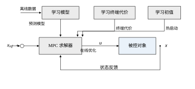
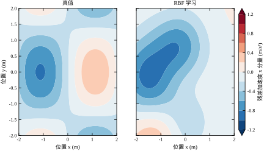
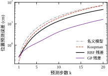
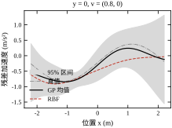
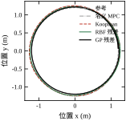
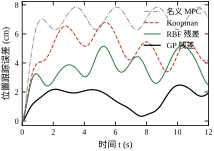
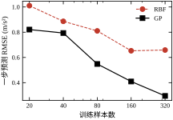
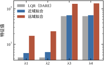
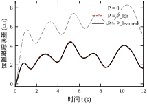
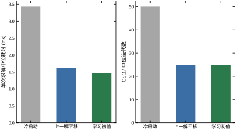

模型预测控制（MPC）的全部结论都挂在一个前提上：预测模型足够准。第 58 章推导滚动优化时，把对象写成 \dot x=f(x)+g(x)u，并默认 f、g 已知。真实系统里这句话很少成立：摩擦、气动阻尼、未标定的力场、负载变化，都不在名义模型里。它们不会让 MPC 立刻失效，而是让“预测的最优”和“实际的最优”逐渐分叉——约束算得刚刚好，实际却贴边；代价算得最小，实际却绕远。
学习增强的 MPC 要解决的就是这个分叉。它的做法不是用一个神经网络替换整个控制器，而是在 MPC 的三处关键位置上，用数据补上模型不知道的那一块。这一节先把这个分叉写成一个可量化的算例，再说明三处插入点分别补什么。
本章的算例是一个二维质点，状态是位置与速度，控制是加速度：
\dot p=v,\qquad \dot v=u+f_r(p,v) \tag{80-1}
其中 f_r 是名义模型完全不知道的残差：
f_r(p,v)=-c_d\|v\|v+\begin{bmatrix}a_f\sin(1.4p_x)\cos(1.1p_y)\\ a_f\cos(1.1p_x)\sin(1.4p_y)\end{bmatrix} \tag{80-2}
第一项是二次阻尼，系数 c_d=0.35；第二项是一个幅值 a_f=0.6 m/s² 的位置相关力场。名义模型只保留双积分器，也就是令 f_r\equiv0。
这两个数字不大，但它们与执行器能力的关系决定了问题的严重程度。本章取各轴加速度上限 u_{max}=3 m/s²，残差在整个工作空间内的一步均方根是 1.195 m/s²，相当于用掉了 40% 的控制权限。换句话说，名义 MPC 每算一次“该用多大加速度”，就有近一半的预算花在它看不见的地方。
后果不必靠推理，仿真直接给出：让同一个 MPC 跟踪半径 1.2 m、角速度 0.6 rad/s 的圆周参考，名义模型的稳态跟踪误差是 7.19 cm，最大 7.85 cm。这个量级在多数巡检、搬运任务里已经不可接受——它不是随机噪声，而是持续偏向圆外的系统性偏差：轨迹的平均半径是 1.252 m，比参考多出 5 cm，同时还有相位滞后。阻尼持续偷走切向速度，未建模的力场又整体把轨迹向外推，两者叠加成这个偏差，而 MPC 对它们一无所知。
把残差学出来再送回 MPC，同一个控制器、同一组权重、同一个时域，误差降到 1.71 cm。改动只有一处：预测时每一步多加一个由数据学出来的加速度项。 这就是本章要讲的全部技术的核心，剩下的都是围绕它的工程细节。
学习不是只有“学模型”一条路。按插入位置分，至少有三处，它们补的东西不同，代价也不同（图 80-1）。
第一处是预测模型。用数据学 f_r，让 MPC 的预测更接近真实。这是最直接、收益最确定的一处，也是本章篇幅最多的部分。它的代价是每次求解要多算 N 次模型推理（N 是预测时域）。
第二处是终端代价。MPC 只优化有限时域，时域末尾的状态需要一个“未来还值多少钱”的估计，这就是终端代价矩阵 P。经典做法是解离散 Riccati 方程，但它只对二次型代价、无约束线性系统精确。代价非二次、约束频繁激活时，P 应该由数据学。这一处的代价最小——终端代价是离线学的，在线只多一个矩阵。
第三处是优化器的初值。MPC 每个周期都要解一个优化问题，热启动能显著减少迭代。传统热启动用上一周期的解平移一位；用数据学一个“状态到首步控制”的映射，可以直接给出更好的初值。这一处不改变最优解，只改变求解速度，因此风险最低，收益取决于求解器。
三处的共同点是：学习模块都只是“插件”，不改变 MPC 的骨架。约束还是那些约束，滚动优化的逻辑还是那一套，安全性仍然由约束保证。这一点很重要，它让学习部分可以被单独替换、单独验证、单独回滚。

为了让数字可复现，本章固定一套设置：采样周期 T_s=0.1 s，预测时域 N=15（即前瞻 1.5 s），控制上限 \pm3 m/s²，状态权重 Q=\mathrm{diag}(10,10,1,1)，输入权重 R=0.1I。参考是圆周，仿真 12 s，共 120 个控制周期。所有数字来自 code/ch080_sim.py，图来自 code/ch080_figs.py。
一句话核心可以这样表述：学习增强的 MPC 不是“用学习替代模型”，而是“用数据补上模型误差，并让这个补丁的误差可以被量化、被约束、被验证”。 三个动词分别对应本章的三条主线——补上（§80.2 的形式）、量化（§80.4 的置信界）、验证（§80.6 与 §80.10 的检查）。
需要强调的是“补丁”这个词的贬义不该被继承。残差学习的效果完全可能超过重新辨识一个全局非线性模型，因为残差通常比原函数更平滑、幅值更小、更容易被有限的数据覆盖。本章的算例里，200 个采样点学出的 RBF 就把 20 步预测误差从 75.47 cm 压到 16.06 cm（GP），而训练数据只覆盖了 [-2,2]^2 的位置范围。
有必要先划清一条界线：本章不讨论“用强化学习直接学一个策略”这条路。那条路的问题是，策略的性能上界由数据覆盖决定，而安全性与可行性没有结构性的保证；一旦遇到训练分布外的状态，输出没有任何可检查的依据。
本章的方法保留了 MPC 的全部结构：显式的预测模型、显式的约束、显式的代价。学习只影响“模型准不准”“终端估得不准”“初值好不好”，不影响“约束必须满足”这件事。因此第 58 章关于递推可行性的结论仍然可用，第 79 章的安全滤波器仍然可以串在后面。这种“结构不动、参数变准”的组合，是工业场景里更容易被接受的一种增强方式。
“残差”是一个笼统的词。按来源分，至少有四类，它们对学习的态度完全不同：
第一类，静态非线性。 同一状态、同一输入，残差总是同一个值。本章的阻尼与力场属于这一类。它可以用静态映射 f_r(x) 学，而且学得会——这是本章方法的适用对象。
第二类，未建模的动态。 残差依赖最近的历史，而不只是当前状态。执行器滞后、传感器滤波、结构振动都属于这一类。用静态映射去学，只能学到它在某种平均工况下的等效值，一旦激励频率变了就失效。正确的做法是把缺失的状态补进 x（例如把执行器输出当作状态），而不是加一层网络。
第三类，参数漂移。 残差的结构不变，但系数在慢变（负载、磨损、温度）。本章的离线训练只能抓住训练时刻的值；要跟上漂移，必须做 §80.9.5 的在线更新。它的特点是“学得会，但会过期”。
第四类，随机扰动。 同一状态重复到达，残差每次都不一样，且均值为零。这一类学不到——你学到的是噪声的均值，而均值接近零；硬学反而会把噪声拟合成结构，让控制器去追不存在的规律。它该由反馈与滤波处理，不是学习的对象。
区分这四类不需要复杂实验，只要一条：让系统在同一状态下重复若干次，看残差的一致性。若重复之间的差异远小于均值（例如小于 20%），属于第一类或第三类，可以学；若差异与均值同量级，属于第四类，不要学；若残差与到达该状态的路径有关（同一状态、不同历史给出不同残差），属于第二类，该扩状态而不是加网络。
本章的算例是纯第一类，这是它能用 200 个点学到 0.310 m/s² 的根本原因。换成第二类或第四类，同样的方法会失效，而失效的样子很像“过拟合”——这也是很多人误判的地方。
十二章的内容可以按三种读法取用。
工程师读法：§80.3（五步流程）、§80.5（离散实现的坑）、§80.8（调参）、§80.10（上线与监控）。这四节构成一条从零到上线的路径，其余章节按需查阅。若时间只够读一节，读 §80.3。
研究者读法：§80.2（三种参数化与两遍法）、§80.4（连续与离散的取舍）、§80.6（ISS 而非渐近稳定）、§80.9（未做的改进）。这四节讲的是“为什么这样做”，以及“哪里还不严谨”。
学生读法：按顺序读，但跳过 §80.10 与 §80.12 的代码细节。§80.1 与 §80.2 建立直觉，§80.3 到 §80.6 是主线，§80.7 与 §80.8 是工程配套，§80.11 收边界。
三种读法共享一个核心判断：这一章解决的问题是“模型不准”，不是“没有模型”。若你的系统连名义模型都没有，该先回去做辨识；若模型已经足够准（残差低于 5%），该去做别的优化。这个判断比任何算法细节都重要。
当然，保留结构也意味着保留了 MPC 的弱点：它仍然需要在线求解优化问题，仍然受时域长度限制，仍然依赖状态可测。学习不解决这些问题。把学习当成万能药，是这一方向最常见的误用。
这一节回答两个问题：残差怎么从数据里取出来，学出来的东西怎么进入 MPC 而不破坏它的凸性。前者是数据处理，后者是结构设计；两者都做对，学习才可能只带来好处。
把真实对象写成“名义模型 + 残差”的形式：
x_{k+1}=Ax_k+Bu_k+B_r f_r(x_k),\qquad B_r=\begin{bmatrix}0\\T_sI\end{bmatrix} \tag{80-3}
名义模型是 A、B 对应的双积分器，f_r 是待学的加速度残差。B_r 只作用在速度通道，这一点决定了后面所有的推导：残差不能直接移动位置，只能通过速度间接影响位置。
残差的标签不需要额外的传感器，用相邻两拍的状态差分就能算：
r_i=\frac{v_{i+1}-v_i}{T_s}-u_i \tag{80-4}
式 (80-4) 看起来是“用差分代替微分”，实际误差很小：本章 T_s=0.1 s，速度在一个周期内的变化是 O(T_s)，差分误差是 O(T_s^2)，与残差本身的量级相比可以忽略。真正需要注意的是时间对齐——v_{i+1} 必须与 u_i 对应同一个控制周期，错一拍会让标签里混进 \dot u 的信息，学出来的模型在控制量突变时会明显失真。
采集时要保证激励充分。若数据全部来自一条平稳轨迹，f_r 只在轨迹经过的窄带上被采样，模型在带外只能靠外推。本章的做法是在位置 [-2,2]^2、速度 [-2,2]^2 内均匀采样 200 个状态，每个状态配一个随机控制量，这样得到的标签覆盖了整个工作空间。
RBF 网络把残差写成一组基函数的线性组合：
\hat f_r(x)=\sum_{j=1}^{K}w_j\exp\!\left(-\frac{\|x-c_j\|^2}{2\sigma^2}\right) \tag{80-5}
中心 c_j 从训练数据中随机选取，宽度 \sigma 是超参，输出权重 w_j 有闭式解：
W=(\Phi^{\mathsf T}\Phi+\lambda I)^{-1}\Phi^{\mathsf T}Y \tag{80-6}
其中 \Phi 是 n\times K 的基函数矩阵，Y 是 n\times2 的残差标签，\lambda 是岭正则。式 (80-6) 的好处是训练不需要迭代：给定中心和宽度，解一次线性方程就完事。代价是中心与宽度一旦选错，权重再优也补不回来。
GP 回归给出的是分布而不是点估计：
\hat f_r(x)\sim\mathcal N\!\left(k^{\mathsf T}K^{-1}Y,\ k(x,x)-k^{\mathsf T}K^{-1}k\right) \tag{80-7}
核函数取平方指数：
k(x,x')=\sigma_f^2\exp\!\left(-\frac{\|x-x'\|^2}{2\ell^2}\right) \tag{80-8}
GP 的均值与 RBF 的形式相近，但它多给了一个方差。这个方差不是装饰：它告诉你“这个位置的数据有多稀”，可以直接用来收紧约束（§80.4.3），也可以用来判断该不该信模型的输出。
两种参数化的差别在数据量上最明显。本章的学习曲线（图 80-9）显示：20 个样本时 RBF 与 GP 的误差是 1.010 与 0.821，差距不大；320 个样本时 RBF 停在 0.659，GP 降到 0.295。RBF 的容量被 48 个固定中心锁死，数据再多也只能把权重拟合得更准；GP 的有效参数量随样本增长，因此能持续受益于更多数据。选哪个，取决于你能否持续采数据——一次性标定的项目用 RBF 更省事，长期运行、数据不断积累的系统用 GP 更划算。
第三条路不学残差，而是换坐标。取一组提升函数 \phi(x)，希望在这个坐标里系统近似线性：
z_{k+1}=A_z z_k+B_z u_k,\qquad z=\phi(x) \tag{80-9}
本章取所有一次项与二次项，共 15 维：1、p_x、p_y、v_x、v_y、p_x^2、p_xp_y、p_y^2、v_x^2、v_xv_y、v_y^2、p_xv_x、p_xv_y、p_yv_x、p_yv_y。用一步数据对做最小二乘即可拟合：
[A_z\ B_z]=\arg\min\sum_{i}\left\|z_{i+1}-A_zz_i-B_zu_i\right\|^2 \tag{80-10}
式 (80-10) 就是扩展动态模式分解（EDMD）的回归形式，正则项加得极小即可。它把“非线性”转移到了坐标里：模型在 z 空间是线性的，MPC 的约束与代价仍可写成二次型，求解器不用改。
代价是截断误差。二次提升无法精确表示 |v|v 这种非多项式项，只能在工作空间内近似。本章的结果是：Koopman 的一步误差 0.445 m/s²，比 RBF 的 0.624 好，比 GP 的 0.310 差；20 步预测误差 72.48 cm，几乎与名义模型（75.47 cm）持平。原因不难理解——提升阶数不够时，误差会随着预测步数指数放大，而 Koopman 模型的谱半径接近 1，放大的速度比残差模型更快。
这条路的适用场景是：非线性主要来自多项式型耦合（例如机械臂的科氏力、刚体姿态的叉乘项），提升阶数取 2–3 就能覆盖；若非线性是强局部性的（饱和、死区、碰撞），多项式提升需要很高的阶数，不如直接学残差。
把学到的残差作为已知扰动加进预测：
x_{k+1}=Ax_k+Bu_k+d_k,\qquad d_k=\begin{bmatrix}0\\T_s\hat f_r(\hat x_k)\end{bmatrix} \tag{80-11}
优化问题本身不变：
\min_{\{u_k\}}\ \sum_{k=0}^{N-1}\left[(x_k-x_k^{ref})^{\mathsf T}Q(x_k-x_k^{ref})+u_k^{\mathsf T}Ru_k\right]+(x_N-x_N^{ref})^{\mathsf T}P(x_N-x_N^{ref}) \tag{80-12}
约束仍是盒约束 |u_k|\le u_{max} 与动力学等式。由于 d_k 是常数向量，整个问题还是凸二次规划，结构与第 58 章完全一致。
唯一的麻烦是 d_k 依赖预测状态 \hat x_k，而预测状态又是待优化的。严格做法是把 \hat f_r 也放进优化，但那会引入非线性，破坏凸性。工程上的折中是两遍法：第一遍按名义模型求解，得到一条预测轨迹；在轨迹上逐点算残差；第二遍把残差当成固定扰动再解一次。两遍法的计算量是单遍的两倍，但收敛快、实现简单，且第二遍的解已经是“在残差已知的前提下”的最优。
两遍法有一个隐含假设：第一遍的预测轨迹与第二遍足够接近，否则残差在错误的点上取值。本章的算例里这个假设成立——第一遍的轨迹偏差约 7 cm，残差场的空间尺度约 1 m，取值的相对误差在 10% 以内。若残差场变化很剧烈（例如经过一个窄峰），两遍法会低估峰值，需要改成迭代到不动点，或者把残差的不确定度也计入约束。
有限时域 MPC 的末尾需要一个代价：
V_f(x)=x^{\mathsf T}Px \tag{80-13}
当系统线性、代价二次、约束不活跃时，P 由离散代数 Riccati 方程给出，且 V_f 恰好等于无限时域最优代价。这是第 58 章的标准结论。
一旦约束频繁激活，V_f 就不再是二次型：靠近边界时“未来值多少钱”会因为可用控制量受限而急剧上升，二次型无法表达这种急剧变化。此时可以用数据直接拟合代价-to-go：
J^*(x_i)\approx\phi(x_i)^{\mathsf T}\theta,\qquad \phi(x)=[1,x^{\mathsf T},(x_ix_j)_{i\le j}]^{\mathsf T} \tag{80-14}
标签 J^*(x_i) 由长时域 MPC 离线求解得到（本章用 N=40 的解作为近似），再用最小二乘拟合 \theta，把二次项部分还原成对称矩阵 P_\theta。
这是一个“以算力换结构”的做法：离线解 120 个 QP，换在线一个 4×4 矩阵。本章的结果是，在约束基本不活跃的近域内，P_\theta 与 P_{lqr} 的相对误差 7.4%；把采样范围扩大到 2.5 m、让输入饱和频繁出现后，误差升到 141.1%。后者不是拟合失败，而是二次型这个函数族本身装不下带约束的价值函数。
第三处插入点是求解器的初值。MPC 每周期解的是同一个结构的 QP，只是参数（当前状态、参考）在变。若能把上一周期的解平移一位作为初值，热启动通常能省掉一半迭代；若再用数据学一个映射
u_0\approx\pi(x-x^{ref})=W\begin{bmatrix}x-x^{ref}\\1\end{bmatrix} \tag{80-15}
则初值不仅“接近”，而且“沿着最优解的规律”。W 的训练标签是离线求解得到的首步控制，回归用最小二乘，训练成本可以忽略。
需要看清这一处的边界：式 (80-15) 只是初值，不参与可行性判断，也不影响最终解。因此它可以很粗糙——本章的线性策略拟合误差是 0.325 m/s²，相对控制上限 3 m/s² 约 11%，仍然把求解时间从 3.40 ms 降到 1.54 ms。反过来，如果把它当作控制器直接输出，11% 的误差就会变成跟踪误差，这就是“策略蒸馏”与“热启动”的分界线。
文献里给“学残差”的常见理由是“残差幅值小、信噪比高”。这个理由在本章并不成立：残差 RMS 是 1.195 m/s²，而参考轨迹的加速度幅值只有 r\omega^2=1.2\times0.36\approx0.43 m/s²——残差比要跟踪的运动本身还大近三倍。真正让残差好学的不是幅值，而是另外三件事。
第一，残差是状态的光滑函数，而原函数不是。 残差场由二次阻尼与正弦力场叠加而成，在状态空间里连续可微、特征尺度约 1 m。原函数里还包含“控制怎么被施加”的部分——执行器的死区、饱和、一阶滞后，这些在状态空间里是折线甚至跳变。核方法、GP 这类工具擅长前者，不擅长后者。把光滑的部分交给学习、把不光滑的部分要么补进名义模型、要么扩状态，是本章方法能奏效的结构性原因。
第二，残差与控制解耦。 式 (80-1) 的 \hat f_r 只依赖 x，不含 u。这一点不是巧合，而是必须。若残差依赖 u，MPC 的预测就变成决策变量的非线性函数，第 58 章的 QP 立刻退化成非线性规划，本章所有的工程便利（凸性、求解时间、可行性判据）一并消失。所以建模时必须守住这条线：残差是状态的函数，不是控制的函数。
这条线还能当一个诊断工具。若你发现“必须把 u 作为学习器的输入，误差才降得下来”，那说明名义模型的 B 写错了，或者系统有未建模的执行器动态。正确的修法是回去改 B、或把执行器状态（例如阀门开度、电机电流）扩进状态向量，而不是给学习器多加一维输入。判据是做一个实验：同一状态下施加不同的 u，看残差标签是否随 u 变化。变化幅度超过标签噪声的 3 倍，就是执行器问题。
第三，残差被动力学结构吸收了一部分。 残差进预测的通道是 [\frac12T_s^2;T_s]，位置通道还带着 T_s^2 的小因子。这意味着残差有 30% 的误差时，折算到位置的偏差只有厘米级；而策略学习里 30% 的控制误差直接就是 30% 的控制误差，没有任何结构替它吸收。这就是“学模型”比“学策略”样本效率高的根本原因：MPC 免费提供了“模型怎么变成控制”这一段映射，学习只需要补最短的一截。
把这三条合起来看，本章 200 个点能跑出 1.71 cm，不是运气，而是任务结构决定的：目标函数清楚、约束清楚、只剩一个光滑的低维函数不清楚。换个任务——比如目标函数本身说不清、或者最优行为依赖长程规划——这三条优势就全部消失，那时该考虑的是 §80.11.6 里的策略学习，而不是继续给残差模型加容量。
把式 (80-6) 的岭回归解代回预测式，会看到一个熟悉的结构。设新样本的核向量为 k(x)=[k(x,x_1),\dots,k(x,x_n)]^{\mathsf T}，则
\hat f_r(x)=k(x)^{\mathsf T}(K+\lambda I)^{-1}Y
这正是 GP 后验均值（式 80-7）在噪声方差取 \sigma_n^2=\lambda 时的形式。也就是说，本章的 RBF + 岭回归与 GP 的均值预测是同一个估计器，差别只在两处：
这个等价关系有三条实用推论，比“选哪个”更值得记。
第一，岭项与噪声方差是同一个旋钮。 在 RBF 里调 \lambda 与在 GP 里调 \sigma_n^2，数学上是同一件事，都对应“允许多大程度不穿过样本点”。所以看到文献里说“RBF 需要仔细调正则、GP 的超参有物理意义”时，不必当成两种技术——它们的数值行为一致，只是 GP 的参数有概率解释，因而更容易用边际似然自动选。
第二，容量瓶颈来自基的个数，不来自方法。 表 80-4 里 RBF 在 160 个样本后进入平台，而 GP 一路下降，根本原因是 48 个中心已经把 200 个样本压成了秩 48 的近似。把中心数加到与样本数同量级，RBF 的均值曲线就应当与 GP 重合，剩下的差别只有方差。读者可以改 ch080_sim.py 里 RBFModel 的 k 与 sigma 验证，判据是两者的验证误差差到 10% 以内。
第三，稀疏 GP 会退回 RBF 的容量限制。 样本到上千之后，GP 的 O(n^3) 求逆不可接受，标准做法是选 m 个诱导点做稀疏近似——这实质上就是把 n 个样本压成 m 个基，与 RBF 的 48 个中心是同一个操作。所以“用 GP 就不用担心规模”是错觉：规模一大，你仍然要面对“用多少基表示先验”这个选择，只是它换了个名字叫诱导点。
本章选 GP 做最终配置，理由只有一个：200 个样本时它不需要做任何近似，且顺手给出了方差，供 §80.9.6 使用。样本量再大一个数量级，这个选择就要重新算一遍。
表 80-1 里有一个反直觉的排序：一步误差 Koopman 是 0.445，比 RBF 的 0.624 更好；但 20 步位置误差是 72.48 cm，比 RBF 的 46.95 cm 更差；闭环误差 5.19 cm，也差于 RBF 的 3.98 cm。一步更准，多步更差，闭环最差——这个模式不是噪声，它指出了 Koopman 在本章失效的三个原因。
第一，最小二乘把容量分给了不重要的分量。 EDMD 拟合的是 z_{k+1}=A_zz_k+B_zu_k 的全部 15 个分量，其中一次项（p、v）幅值在 1–2 量级，二次项（p^2、pv、v^2）幅值在 1–4 量级，但它们承载非线性。最小二乘按绝对残差加权，拟合会优先把一次项做准——因为一次项决定了一步预测的主体。结果是：一步预测看起来很好（主要靠一次项），而二次项系数有偏；一旦递推 20 步，二次项的偏差被反复放大，误差就追上甚至超过残差法。
第二，它必须同时拟合名义模型，浪费了容量。 残差法里 A、B 是解析给定的双积分器，学习只管那 1.195 m/s² 的偏差；Koopman 要把“双积分器 + 残差”一起从数据里拟合出来。后者当然需要更多数据、更多容量，而它拿到的数据量与残差法一样多（200 个点）。
第三，无约束最小二乘不保证稳定性。 EDMD 解出的 A_z 没有任何谱半径约束，数值上很容易出现略大于 1 的特征值；单步看不出来，多步就会指数增长。工程上必须显式检查 \rho(A_z)，若大于 1，做一次稳定化投影（把超出的特征值拉回单位圆内）。这一步本章没有做，因为 Koopman 只是对照组的第三条，但它是一个必须记住的检查项。
这三条合起来给出一条比“选哪个模型”更通用的教训：一步误差不能作为选型依据。§80.3.4 的验收线之所以要求看第 N 步而不是第一步，就是因为存在“一步好、多步差”这一整类模型。判断一个模型能不能进 MPC，要问的是“它在 N 步之后还可信吗”，而不是“它拟合得准不准”。
反过来说，Koopman 也不是没有适用场景。若系统的非线性确实是多项式型、且你有足够数据覆盖高阶项、还能接受离线做稳定化处理，它的优势是线性——一旦提升完成，MPC 里就是纯矩阵乘，没有核函数、没有方差计算，在线成本最低。本章的算例里，它的耗时（32.45 ms）确实与名义模型（31.44 ms）几乎一样。所以正确的结论不是“Koopman 不行”，而是“在本章的残差结构下，把容量花在残差上比花在整体动力学上更划算”。
残差模型 \hat f_r 的输入不是“状态越多越好”，而是一个需要论证的设计选择。本章给的是完整状态 (p,v)，两条必须给的理由与三条必须守的禁忌都值得说清楚。
为什么必须给速度。 阻尼项是 -\rho\|v\|v，它只依赖速度、不依赖位置。若输入只给位置，模型在这条维度上永远学不到东西，误差下限就是阻尼的贡献——本章约占残差的一半。判据很简单：画一张残差对 \|v\| 的散点，若呈明显的二次趋势，速度必须进输入。
为什么必须给位置。 力场是正弦型，只依赖位置。这一项的判据是残差对 p 的切片是否有周期性起伏（图 80-2 的左栏）。位置与速度各管一半，缺一个就只能学到一半。
为什么不该给 u。 §80.2.7 已经论证过：给了 u，MPC 的预测就变成决策的非线性函数，QP 不再是 QP。这不是“精度换凸性”的取舍，而是“能不能用”的分界。
为什么不该给参考轨迹。 这一条最容易被诱惑。参考轨迹与位置强相关，把它作为输入，训练误差会明显下降——因为模型实际上在学“参考在该点要求什么”，而不是“对象在该点缺什么”。危险在于换一条轨迹后立刻失效：本章的圆周是 r=1.2 的定圆，若把参考的相位作为输入，模型会把“沿圆的向心加速度”记成残差，换成直线轨迹就完全错了。检验办法只有一个：用两条不同的轨迹训练，在第三条上验证。若验证误差比训练误差高一个量级，说明输入里混进了与轨迹绑定的信息。
为什么不该输出位置增量。 输出必须与 B_r 的结构一致，即只输出加速度（速度通道的增量除以 T_s）。若让模型直接输出位置修正，它会与 §80.4.1 的离散化缺口纠缠在一起，换 T_s 就得重训。
还有一条实现层面的建议：归一化是输入设计的一部分，不是预处理。各维的量级差一个数量级以上时（例如位置用米、速度用毫米每秒），单一长度尺度的核会偏向大量级的那一维，等于隐式地把小量级维度丢掉了。本章两维都归一化到单位方差，0.7 的核宽才有“与中心间距同量级”的含义。
把这五条合起来，输入设计的原则可以压成一句：只给物理上真正进入残差的状态，不给任何与任务绑定的量。前者保证模型学的是对象，后者保证模型换任务还能用。本章的算例在这个原则下是最简单的情形——两个状态都进入、两个禁忌都不碰。
这一节给一条可执行的路线。顺序不能颠倒：先钉模型，再采数据，再选参数化，再接入，最后闭环验收。颠倒的典型后果是——先去调网络结构，回头发现残差标签本身算错了符号，前面所有工作作废。
名义模型不是“越准越好”，而是“必须显式写下来、且能复现”。本章的名义模型只有两个矩阵：
A=\begin{bmatrix}I&T_sI\\0&I\end{bmatrix},\qquad B=\begin{bmatrix}\frac12T_s^2I\\T_sI\end{bmatrix} \tag{80-16}
它对应“质点 + 理想加速度源”。真实对象在这之上多了阻尼与力场，这部分才是学习的目标。把名义模型写成式 (80-16) 的闭式，而不是直接拿一段仿真代码当模型，目的是让 MPC 的预测能与残差项解耦——否则你无法判断误差是模型结构错，还是残差没学好。
接下来测残差的量级，只要一个数：残差的一步均方根与执行器上限之比。本章这个比值是 1.195/3\approx40\%。它决定后面所有工作的必要性：
这个判据很粗，但它能在投入之前给出“该不该做”的答案，比事后解释误差来源有用得多。
残差不能直接测量，只能从相邻两步的状态差里反推：
r_i=\frac{v_{i+1}-v_i}{T_s}-u_i \tag{80-17}
式 (80-17) 看着简单，却是整章最容易出错的地方。它隐含三个条件：u_i 是这一步实际施加的控制（不是指令值）；v_{i+1} 与 v_i 的时间戳严格相差 T_s；采样与执行之间没有未记录的延迟。三者任一不满足，残差里就混进了与状态无关的常值偏置，而这个偏置会被学习器当成“模型的一部分”学进去。
差分本身还带来 O(T_s^2) 的截断误差。本章 T_s=0.1 s，速度由加速度积分而来，差分的相对误差在千分之一量级，可以忽略；若 T_s 取到 0.01 s 以下，位置量化噪声会被 1/T_s 放大，这时应改用中心差分或直接对速度做低通后再差分。
激励的设计比样本数量更重要。本章的数据是均匀随机采样：位置在 [-2,2]^2、速度在 [-2,2]^2 内各取 200 个点，标签直接由式 (80-2) 算出。这样做的理由是让残差场在状态空间里被均匀照亮——如果只用跟踪圆周的数据，样本会全部挤在环带附近，学出来的模型在环外完全没有依据。图 80-2 的两栏对比说明即使均匀采样也有类似的边缘问题：左栏是真实残差场，右栏是 RBF 的复现，中间区域吻合得不错，但靠近 p=\pm2 的边界处右栏明显被拉平——那里邻域样本稀，核函数已经衰减到接近零。

样本量按“参数个数 × 10”起步。RBF 有 48\times2 个权重，本章用 200 个点，约 2 倍，偏少；学习曲线显示从 80 到 320 个样本，GP 的误差从 0.548 降到 0.295，还在一路下降。工程上更稳妥的做法是先用 100 个点跑通全链路，再按 §80.8 的判据决定要不要补数据。
三种参数化的选择不该靠偏好，而该看三件事：非线性是否多项式型、是否需要不确定度、数据是否会持续增长。表 80-1 是本章的判据。
表 80-1 三种参数化的选择判据
| 判据 | 选 RBF | 选 GP | 选 Koopman |
|---|---|---|---|
| 非线性形态 | 局部、光滑 | 局部、光滑 | 多项式耦合为主 |
| 是否需要方差 | 不需要 | 需要（安全约束用） | 不需要 |
| 数据是否持续增长 | 一次性标定 | 长期积累 | 一次性标定 |
| 在线计算量 | 最低（48 次核） | 中（需算核矩阵） | 最低（矩阵乘） |
| 本章一步误差 | 0.624 | 0.310 | 0.445 |
表 80-1 里“在线计算量”一列容易被忽略。GP 的均值预测需要对全部训练样本算核函数，样本到 1000 时单次推理的成本会超过 QP 本身；RBF 的中心数固定，成本与样本量无关；Koopman 只是一次 15 维矩阵乘。这就是为什么本章的闭环耗时里，GP 的中位数（31.23 ms）并没有明显高于名义（31.44 ms）——样本只有 200 个，还没到 GP 的拐点。
接入 MPC 之前必须过一道离线关：多步预测误差。一步误差小不代表多步小，因为误差会在递推中放大。本章的四组数据（图 80-4）说明了这一点：
表 80-2 多步开环预测的位置误差（单位 cm）
| 步数 | 名义 | RBF | GP | Koopman |
|---|---|---|---|---|
| 1 | 0.28 | 0.28 | 0.28 | 0.18 |
| 5 | 6.31 | 3.41 | 1.26 | 4.68 |
| 10 | 22.79 | 13.55 | 4.21 | 18.99 |
| 20 | 75.47 | 46.95 | 16.06 | 72.48 |
表 80-2 的第 1 步四列几乎相同，原因是开环推演里残差只进速度通道，位置增量仍是 T_sv+\frac12T_s^2u，四组模型在第一步给出的位置完全一样，差别只来自速度被修正后对下一步的影响。到第 20 步差距拉到 4.7 倍。这个现象给出一条实用的验收线：看第 N 步（预测时域末端）的误差，而不是第一步。本章 N=15，验收线取第 20 步，要求残差模型把误差压到名义的一半以下——RBF 与 GP 都过，Koopman 不过。

图 80-4 把表 80-2 画成对数坐标，四条曲线的斜率差别一目了然。名义模型与 Koopman 的斜率最陡，说明误差在快速放大；GP 的斜率最平，20 步内只涨了不到两个数量级。斜率本身就是“模型的可信时长”的度量：把允许误差画一条水平线，曲线与它的交点就是可信步数。工程上判断 N 该取多大，可以直接用这张图——N 不应超过可信步数，否则时域末端的信息是噪声。
过了离线关，再按两遍法接入（§80.2.4）。接入时有一个实现细节值得单独说：式 (80-11) 的 d_k 只写了速度通道，漏掉了一步之内残差对位置的直接贡献 \frac12T_s^2\hat f_r。完整的写法是 d_k=[\frac12T_s^2\hat f_r;\,T_s\hat f_r]，本章为了保持“只加一项”的最小改动没有补。这一项的后果是位置通道出现固定滞后，量级约 0.6 cm，不随步数累加，因此不影响闭环收敛，但会抬高多步预测的绝对偏差。判断要不要补，就看 \frac12T_s^2|f_r| 是否超过允许跟踪误差的 10%——本章是 0.6 cm 对 2 cm 的 30%，偏大，所以 §80.9 把它列为第一条改进。
闭环验收不能只看一条误差曲线。至少要三张图（图 80-5、图 80-6、图 80-8）：
第一张是轨迹图。它回答“车有没有走对地方”。本章四条轨迹都贴着圆周，差别在径向偏移：名义模型的平均半径比参考大 5 cm，叠加相位滞后后总误差 7.19 cm；GP 那条几乎与参考重合（平均半径 1.210 m 对 1.200 m）。
第二张是误差时间历程。它回答“误差是常值还是振荡”。名义模型的误差曲线是一条缓慢抬升后稳定的曲线，说明是系统性偏差；RBF 与 GP 的曲线在起步阶段有 2–3 s 的过渡，之后压到厘米级。若误差曲线出现周期性振荡，问题通常在预测时域与参考周期的匹配，而不在学习器。
第三张是耗时分布。它回答“这套东西能不能实时跑”。本章的中位数是 31.23–32.45 ms，P95 是 37.58–46.67 ms，全部低于 T_s=100 ms，余量约 2 倍。注意名义模型的中位数（31.44 ms）与 GP（31.23 ms）几乎一样，说明瓶颈在 QP 而不在模型推理——这也解释了为什么 §80.2.6 的热启动能把时间砍掉一半，而换更快的模型几乎不影响总耗时。
三张图都过，才算这一章的方法在你的系统上可用。只过第一张不算，因为轨迹好看可能只是参考选得温和；只过第二张也不算，因为误差小可能靠的是权重调得软。
这条路线里没有“调学习器”这一步，因为学习器的参数（中心数、核宽、正则）在第三步就定了，后面不再动。真正被省略的是安全兜底——它应该在第一步之前就接好，而不是等闭环出了问题再补。
具体做法是把第 79 章的 CBF-QP 串在 MPC 之后：MPC 输出 u，安全滤波器检查 u 是否满足约束面，不满足就投影到最近的可行点。这样即使学习模型在数据覆盖外给出荒谬的残差，最坏结果也只是“MPC 的建议被否决”，而不是“系统撞上去”。本章的算例不涉及硬约束，因此仿真里没有接这一层；但只要你的系统有不可违反的边界，这一层就不能省。
§80.3.2 的采样方式是仿真的特权：残差可以直接由式 (80-2) 算出，样本点想撒在哪就撒在哪，重复访问同一状态没有成本。真实系统上，采数据本身是一次实验，必须同时满足三个约束：安全（不能为了覆盖把系统开进危险区）、激励（数据必须在状态空间里“动”起来，否则学到的只是一个工作点附近的局部线性化）、可重复（同一状态要被访问多次，才能把噪声与模型误差分开）。
先说激励信号。位置是速度的积分，速度是加速度的积分，真正被激励的是加速度通道，而加速度就是 u+\hat f_r。所以激励应该加在 u 上，且幅值要足够大——若 u 只在 0.1 m/s² 附近抖动，残差（本章 RMS 1.195）会完全淹没在控制输入里，标签的信噪比接近零。经验做法是让激励幅值至少与残差的 RMS 同量级，本章即 |u|\ge1.2 m/s²，同时保留约 30% 的余量给反馈，避免开环激励把系统推出边界。
波形选择上，四种常见做法的取舍是：
本章的残差场空间尺度约 1 m，对应的时间尺度是 1/0.8\approx1.25 s，即 0.8 rad/s 上下。多正弦取 0.5、1.5、4 rad/s 三个频点，既覆盖了力场的主要起伏，又不至于把执行器推到饱和。
再说覆盖度。覆盖度不能用“点数”衡量，因为点可以挤在一起。可操作的度量是分格计数：按残差场的特征尺度把每一维分成若干段——本章是位置每 1 m 一段、速度每 1 m/s 一段，[-2,2]^4 因此被分成 4^4=256 格——然后统计每格里的样本数。判据是至少 60% 的格子有 5 个以上样本。本章的 200 个点平均每格不到 1 个，这个密度在仿真里够用（标签无噪声），在真实系统上远远不够：测量噪声 0.05 m/s² 时，单点标签的标准差就有 0.05，要把它平均到 0.02 需要 6 个重复点。这是一个必须承认的差距，也是本章的算例只能当“方法演示”、不能当“工程指标”的原因。
划分训练集与验证集时要按轨迹分，不能按点随机分。相邻采样点在时间上只差 0.1 s，状态几乎相同，标签高度相关；随机分点会让验证集里充满训练点的“邻居”，验证误差系统性偏乐观。正确做法是留出整段实验（例如五段激励里的最后一段）做验证。本章的算例是独立同分布采样，不存在这个问题，但真实数据一定有。
还要估算时间预算。本章 200 个点乘 T_s=0.1 s 只有 20 s，看着很短，但真实系统每采一个点要“移动到目标状态—稳定—记录—离开”，平均 3–5 s，200 点就是 10–20 min；若每格还要求 5 个重复点，时间再乘 5。所以真实系统的数据量通常被时间预算卡住，而不是被存储卡住。这也是为什么 §80.9.3 的主动采样值得做：同样 200 个点，选点选得好，覆盖度能翻倍。
最后是安全包络。采集时的状态包络应当比任务包络大 20% 左右，多出来的这部分就是“学习用的余量”：模型在任务边界附近必须有数据支撑，否则一到边界就开始外推。但包络不能大到连低增益控制器都拉不回来。可行的做法是采集阶段用一个小权重的 LQR 保底（Q/R 比任务时小一个量级），让系统在激励下自由游走，一旦接近包络就由保底控制器拉回。这样采到的数据既有激励、又不会失控，代价是数据分布偏向包络内侧——这一点要在覆盖度统计里如实反映。
采完之后先画三张图，再决定要不要训练：残差随位置的切片、残差随速度的切片、残差幅值的直方图。前两张看结构是否光滑——光滑才适合核方法，若切片上出现台阶或折线，说明有未建模的开关或饱和，先补进名义模型；第三张看有没有长尾——长尾说明存在未记录的延迟或限幅，此时应当回去查数据采集链路，而不是换一个更复杂的模型去拟合它。
前面五步写成了一条直线，实际执行时一定会往回走。区别在于：往哪一步回，决定了你是补一轮数据、换一个参数化，还是重做整个接入。下面是本章总结的五个判定点与对应的回退目标，每一条都配了判据。
判定点一：一步误差是否降到残差 RMS 的 60% 以下。 本章的 GP 是 0.310/1.195=26\%，RBF 是 52%，都过线；若你的模型停在 80% 以上，问题几乎一定在数据或标签，不在模型容量。此时应当回第二步查时间对齐、查是否用了实际施加的控制，而不是回第三步换一个更大的网络。这是最常见的误判：误差大就加容量，结果把噪声也拟合进去，验证误差反而更差。
判定点二：第 N 步误差是否降到名义的一半以下。 本章用第 20 步做这条线（表 80-2）。若一步过关、多步不过关，说明误差的时间相关性太强或者模型在递推中失稳——回第三步，检查参数化是否合适（Koopman 就是栽在这里），或者缩短 N 到可信步数以内。
判定点三：闭环误差是否落在离线界的 3 倍以内。 本章 GP 的界是 2.4 cm、实测 1.71 cm，落在界内；若实测比界大 3 倍以上，说明问题出在“接入”而不是“模型”——回第四步，检查两遍法的时域是否一致、式 (80-11) 的缺口是否过大、有没有未补偿的延迟（§80.5.7）。
判定点四：耗时是否在预算内。 若精度达标而 P95 超时，回第五步做热启动，或者缩短 N。不要试图通过换更快的模型来解决——§80.6.4 已经量过，换模型对总耗时的影响不到 1%。
判定点五：换一条参考轨迹后是否还成立。 若离线与闭环在训练轨迹上都很好、换轨迹就崩，说明模型学到了与任务绑定的东西——回第一步，检查名义模型是否漏了结构项、学习器的输入里是否混进了参考（§80.2.10）。
这五条的共同逻辑是：每一道验收关都对应一个特定的失败原因，不要把失败归到最后一个环节。工程上最常见的浪费不是某一步做错，而是错了之后从错误的步骤重来——把标签问题当成容量问题，把接入问题当成模型问题，每一次都要多花一轮完整的数据采集与训练。
回退时还有一条纪律：每次只退一步，退完之后把下游的所有验收重跑一遍。跳过中间步骤直接改上游，会让你失去“到底是哪一处改动起了作用”的信息，而这正是表 80-6 那种调参记录存在的意义。
上一节的所有式子都是离散的：残差在采样点上定义，模型用 A、B 递推。真实的物理对象是连续的，学习模块最终要么嵌进连续时间的控制器，要么在离散化之后工作。这一节把这条缝补上，并说明两种做法在什么情况下会给出不同的结果。
连续对象写成
\dot x=f(x)+g(x)u,\qquad f(x)=f_0(x)+f_r(x) \tag{80-18}
其中 f_0 是名义模型（本章是双积分器），f_r 是待学的残差。两条路线：
路线甲（先学再离散）：先用数据拟合 f_r 这个连续向量场，再在 MPC 内部用数值积分（本章用 RK4）推演。好处是残差与采样周期解耦——换 T_s 不用重训；坏处是每次预测要做 N\times4 次函数求值，计算量是矩阵乘的十几倍。
路线乙（先离散再学）：把对象离散成 x_{k+1}=Ax_k+Bu_k+d_k，直接学 d_k。好处是 MPC 里只有一次矩阵乘加，最快；坏处是 d_k 依赖 T_s，而且它把“残差”与“离散化误差”混在了一起。
本章用的是路线乙：式 (80-17) 的残差标签只统计速度通道。严格说，一步之内残差对位置的直接贡献是 \int_0^{T_s}(T_s-s)f_r\,ds\approx\frac12T_s^2f_r，式 (80-11) 的 d_k 里没有这一项。按 |f_r|=1.195 估算，漏掉的量约 \frac12T_s^2|f_r|\approx0.6 cm。它的性质是固定滞后而非累积误差：每一步都落后同样的距离，不会越积越多。但 0.6 cm 与表 80-2 里第一步的位置误差（0.28 cm）同量级，说明第一步误差主要来自这处公式缺口，而不是模型学得不准。
判断该走哪条路线，不能只看 T_s，要看“被丢掉的那一项”相对残差本身有多大：
T_s 越小，丢掉项按 O(T_s^2) 下降，这个判据越容易满足；但 T_s 小到 10 ms 以下时，差分标签的噪声放大（§80.3.2）反而成了主要矛盾，这时应当改为路线甲，用积分而不是差分构造标签。
若走路线甲，GP 的定义要改一处：样本不再是“一步的状态差”，而是“某一时刻的加速度观测”。观测模型写成
y_i=f_r(x_i)+\varepsilon_i,\qquad \varepsilon_i\sim\mathcal N(0,\sigma_n^2I) \tag{80-19}
形式与式 (80-7) 相同，但 y_i 的来源变了：它可以是式 (80-17) 的差分，也可以是惯性单元的直接测量，还可以是离线辨识实验里的力传感器读数。核函数仍然取式 (80-8) 的平方指数，但长度尺度 \ell 要按状态空间的距离来选，而不是按时间。本章 \ell=0.8，对应“位置差 0.8 m 或速度差 0.8 m/s 时相关性衰减到 e^{-1/2}”，与残差场的空间尺度（约 1 m）相当。
GP 在这里的真正价值不是均值，而是方差可以转成一条逐点的误差上界：
\|f_r(x)-\mu(x)\|\le\beta\,\sigma(x) \tag{80-20}
\beta 取 2 对应约 95% 置信，取 3 对应约 99.7%。这个上界可以直接进入第 79 章的鲁棒 CBF 项：把 2\|d\|\Delta 里的 \Delta 换成 \beta\sigma(x)/T_s 的量级，约束就会在数据稀疏处自动收紧。这是“学习 + 安全”两章之间最自然的一个接口，也是 GP 相对 RBF 唯一无法被替代的优势。

图 80-3 把这件事画了出来。灰色带是 \pm2\sigma 的区间，实线是 GP 均值，虚线是真值，点线是 RBF 的预测。沿这条切片量出的平均绝对误差是：|x|<1.5 内 GP 0.08、RBF 0.26（单位 m/s²）；靠边 |x|>1.5 时 GP 0.09–0.15、RBF 0.16–0.27。同时置信带的平均半宽从中间段的 0.25 涨到右端的 0.57，翻了一倍多——方差在提示“右边数据稀”。RBF 没有这个提示，它的曲线看着同样平滑，误差却是 GP 的三倍。方差的价值不在于让预测更准，而在于让你知道哪里不准。
需要提醒的是，本章的实测覆盖率是 100%，而名义置信水平是 95%——这说明方差偏保守。保守不是错误，但它会让约束在数据充足的区域也被无谓地收紧，代价是控制权限的浪费。校准的办法是看覆盖率随 \beta 的变化：若 \beta=1.5 时覆盖率仍有 98%，就把 \beta 降到 1.5；若 \beta=2 时覆盖率只有 80%，说明核参数选错了，该调 \ell 而不是调 \beta。
离散情形下终端代价由 Riccati 方程给出（式 80-13 的前提）。连续情形下对应的是 Hamilton-Jacobi-Bellman 方程：
0=\min_u\left[\ell(x,u)+\nabla V(x)^{\mathsf T}(f(x)+g(x)u)\right] \tag{80-21}
当 f 线性、\ell 二次、无约束时，V(x)=x^{\mathsf T}Px，式 (80-21) 退化为连续代数 Riccati 方程，这就是第 58 章的结论。一旦 f 含残差 f_r，V 就不再是二次型——残差把最优轨迹弯折，价值函数跟着弯折。
这时有两种做法。第一种是把 f_r 的均值代入式 (80-21)，用数值方法（例如策略迭代）解出 V 的网格表，在线插值。第二种是仍用二次型，但把 P 在残差影响下重新拟合——这正是 §80.2.5 的数据驱动做法，只是标签从离散 MPC 换成连续 HJB 的解。
本章选第二种，原因是网格表在 4 维状态上需要 O(10^5) 个点，在线插值的耗时超过 QP 本身；而二次型只需要 10 个独立元素，误差在近域是 7.4%（§80.2.5）。这个取舍的边界很清楚：状态维数不超过 4、精度要求不低于 5% 时用二次型；维数更高或需要贴边运行时，才值得上网格或函数逼近。
多数工程场景用离散形式就够了，因为控制器本来就是按周期跑的。但有三种情况必须回到连续形式：
第一，执行器动态不可忽略。若执行器的时间常数与 T_s 同量级，离散模型里的 u_k 就不再是“这一步的恒定加速度”，而是一个被滤过的信号。这时要么把执行器状态并进 x，要么用连续模型加零阶保持器重新离散，否则学到的残差里会混进执行器的滞后。
第二，约束是连续的。第 79 章的 CBF 条件是逐时刻成立的，离散化之后只在采样点成立，两点之间可能越界。本章的护卫裕量（式 79-25）就是为这件事准备的，而它的推导依赖连续时间的导数，不能只在离散模型上做。
第三，采样周期可变。事件触发、网络化控制里 T_s 不是常数，路线乙的 d_k 会随 T_s 变化而失配。这时只能走路线甲。
除这三种情况，连续形式带来的只是额外的计算与调试成本。工程判断的顺序应当是：先按离散做，跑通闭环，量出上述三条中是否有任何一条成立，再决定要不要改。
控制器最终是按周期执行的，所以离散形式才是落地的那一层。这一节把离散化的精确形式、采样周期的选法、可行性的保证方式、以及学习模块在数值上的坑逐条说清楚。
对式 (80-18) 在零阶保持下做精确离散化，名义部分是矩阵指数：
A=e^{A_cT_s},\qquad B=\int_0^{T_s}e^{A_c s}B_c\,ds \tag{80-22}
对双积分器，A_c 是幂零矩阵，指数级数只有前三项，式 (80-16) 就是它的精确值，不是近似。这一点常被忽略：很多实现里写 A=I+A_cT_s，对双积分器会丢掉 \frac12T_s^2 那一项，位置递推立刻错一半。判断方法是算 A 与 e^{A_cT_s} 的差，若不为零就不是精确离散。
残差部分的处理有两种。把 f_r 在一步内当常数，得到 d_k=[0;T_s\hat f_r]，误差是 O(T_s^2|f_r|)；把 f_r 的线性项也保留，得到 d_k=[\frac12T_s^2\hat f_r;T_s\hat f_r]，误差降到 O(T_s^3)。前者是本章用的，后者是 §80.4.1 指出的改进项。两者的差只有 0.6 cm，但在 T_s=0.1 s、允许误差 2 cm 的场合，这 0.6 cm 占了 30%，不能算“次要项”。
T_s 不是自由参数，它被三件事夹住：
第一，预测时域要覆盖对象的响应时间。 本章的参考周期是 2\pi/0.6\approx10.5 s，N T_s=1.5 s 只覆盖了七分之一圈。这在跟踪任务里够用，因为参考是缓变的；若参考里有 0.5 s 的阶跃，N T_s 至少要 2 s。经验判据是 NT_s\ge3\tau，\tau 是被控对象的主导时间常数。
第二，QP 的规模随 N 线性增长。 本章的决策变量是 4(N+1)+2N=94 个，约束约 200 条，OSQP 的中位求解时间是 31 ms。N 翻倍，时间大致翻倍；T_s 减半而 NT_s 不变，N 也翻倍。所以“提高控制频率”和“加长预测时域”在算力上是同一件事，不能同时要。
第三，差分标签的噪声随 1/T_s 放大。 式 (80-17) 里速度差除以 T_s，若速度测量有 \sigma_v 的噪声，残差标签的噪声就是 \sqrt2\sigma_v/T_s。本章假设速度是干净的；实际系统里 \sigma_v=0.01 m/s、T_s=0.01 s 时，标签噪声达到 1.4 m/s²，与残差本身同量级，学出来的东西全是噪声。
三条夹出来的可行区间通常很窄。本章的 T_s=0.1 s 是折中：N=15 给出 1.5 s 的前瞻，QP 在 30 ms 量级，差分噪声可忽略。换一个系统，这个数要重新夹一遍，不能照抄。
第 58 章证明递推可行性的标准做法，是要求终端状态落在一个控制不变集里：
\mathbb X_f=\{x:\ x^{\mathsf T}Px\le\alpha\},\qquad x\in\mathbb X_f\Rightarrow\exists u\in\mathbb U:\ Ax+Bu\in\mathbb X_f \tag{80-23}
学习模型进来之后，这个集合不能直接用。原因是 MPC 内部的预测用的是“名义 + 学到的残差”，而真实系统用的是“名义 + 真实残差”，两者的差就是学习误差 e_r=f_r-\hat f_r。要保证递推可行性，终端集必须按误差膨胀：
\mathbb X_f^{\epsilon}=\{x:\ \mathrm{dist}(x,\mathbb X_f)\le\epsilon\},\qquad \epsilon\approx\frac12NT_s^2\|e_r\| \tag{80-24}
式 (80-24) 里的 N 不能省。单步的位置偏差只有 \frac12T_s^2\|e_r\|\approx1.6 mm，看着可以忽略；但预测是 N 步递推，偏差沿时域累加，N=15 时最坏约 2.4 cm。本章的 GP 一步误差是 0.310 m/s²，乘上去正好是这个量级——与 2 cm 的允许跟踪误差相当，不能当作小量。
这条式子给出一条清晰的判据：若 \epsilon 达到允许跟踪误差的同一量级，学习误差就已经在吞掉精度预算，此时应当换更好的模型或缩短 N，而不是收紧终端集。本章 GP 的 \epsilon\approx2.4 cm，与 2 cm 的允许误差刚好贴线——这解释了为什么闭环误差停在 1.71 cm 而没有进一步下降；换 RBF（0.624）时 \epsilon 升到 4.7 cm，Koopman（0.445）时 3.3 cm，都越过了这条线，与闭环结果（3.98 cm 与 5.19 cm）的排序一致。
比误差更麻烦的是外推：数据覆盖之外 \hat f_r 可能给出任意值，此时式 (80-24) 的 \epsilon 无界。这一条不能靠收紧终端集解决，只能靠两道工程措施：给学习输出加硬饱和 |\hat f_r|\le f_{max}（f_{max} 取训练集残差最大值的 1.5 倍），以及按 §80.3.6 串安全滤波器，让约束层不依赖学习模型。前者省算力，后者兜底，两条可以同时用。
式 (80-6) 里的 \lambda 不是用来提高精度的，而是用来兜底的。本章的 RBF 中心不是均匀网格，而是从 200 个训练样本里随机挑出的 48 个点，输入先按均值方差归一化，核宽 0.7 是归一化单位。随机挑选意味着一对中心可能落得很近：此时 \Phi 的两列几乎线性相关，\Phi^{\mathsf T}\Phi 的最小特征值趋零，直接 solve 会失败或给出量级错误的权重。
本章这一组中心运气不错：\Phi^{\mathsf T}\Phi 的迹是 138，最大特征值 19.7，最小 0.056，条件数 354；加 \lambda=10^{-6} 之后条件数几乎不变（353.9），因为最小特征值远大于 \lambda。这说明岭项在正常配置下确实只是保险。它的作用是给特征值一个下界——\Phi^{\mathsf T}\Phi+\lambda I 的特征值不小于 \lambda，条件数因此不超过 (\lambda_{max}+\lambda)/\lambda。这个上界很松，保证的是“可解”，不是“良态”。
真正的良态来自中心分布。若验证误差对 \lambda 从 10^{-8} 变到 10^{-2} 都很敏感，说明中心选得不好——可能是两个中心几乎重合，也可能是核宽远小于中心间距——此时应改用 k-means 聚类中心或规则网格，而不是继续调 \lambda。
判断 \lambda 是否合适，看两个量：训练残差与验证残差。\lambda 太小，训练残差接近零而验证残差抬头，是过拟合；\lambda 太大，两者都高，是欠拟合。本章的 \lambda 取 10^{-6}，是在 200 个样本、96 个权重的配置下试出来的，换配置要重试。
GP 的对应问题是白噪声方差 \sigma_n^2。它同时起两个作用：正则化核矩阵、解释测量噪声。\sigma_n 取得太小（例如 10^{-4}），K 接近奇异，均值插值会穿过每个样本点，方差在样本处塌到零——这会让式 (80-20) 的界在样本点上过紧，一旦真实值偏离就漏检。本章取 \sigma_n=0.05，与残差幅值（1.195）的比值约 4%，是一个偏保守的选择。
§80.2.4 说过，两遍法要求第一遍的轨迹与第二遍足够接近。离散实现里这个条件还有一个更细的版本：两遍必须用同一个 T_s 与同一个时域长度。若第一遍用 N=15、第二遍为了省时间用 N=10，残差序列的长度就对不上，程序不是报错就是静默截断，出来的解在末尾几步完全没有残差补偿。
这个错误的症状很隐蔽：闭环误差比单遍还差，但看不出哪里错。检查方法是打印两遍的残差序列长度，确认都等于 N；再确认第二遍的状态轨迹与第一遍的偏差小于残差场空间尺度的 10%。本章的这个偏差是 7 cm 对 1 m，满足条件。
两遍法的另一个实现细节是热启动的传递。第一遍的解直接作为第二遍的初值，是最省事的做法；图 80-8 的单 QP 实验说明，热启动能把迭代数从 50 降到 25，时间从 3.40 ms 降到 1.63 ms。若两遍之间重新冷启动，第二遍的耗时会回到冷启动水平，两遍法的总代价接近单遍的三倍，性价比就没了。
式 (80-23) 给了终端集的定义，式 (80-24) 给了它该怎么膨胀，但两式都默认 \alpha 已知。实际工程里 \alpha 是要算出来的，而且算法有三档，成本与保守性完全不同。
第一档是闭式估计，一行代码。 思路是放弃“MPC 在终端集内可行”这个强要求，只要求“存在一个局部线性控制器能让状态留在里面”。取 LQR 增益 K，闭环 A_{cl}=A-BK 在 P 的度量下是收缩的，于是只剩输入约束要满足：x^{\mathsf T}Px\le\alpha 时，第 i 个控制分量的最大值是 \sqrt{\alpha\,(KP^{-1}K^{\mathsf T})_{ii}}，要求它不超过 u_{max}，得到
\alpha\le\min_i\ \frac{u_{max}^2}{(KP^{-1}K^{\mathsf T})_{ii}}
这个估计是保守的：它只用了 LQR 一个控制器，而 MPC 在终端集内的可行域更大。但对终端集来说保守是可以接受的——终端集的作用是“兜住时域末端”，不是“尽量大”。工程上先用它把闭环跑起来，等确认约束会激活，再换更精确的算法。
第二档是网格枚举，最直观。 把终端集所在的状态盒按每维 21 点离散，4 维共 21^4=194481 个点，对每个点解一个小 QP，检查是否存在 u\in\mathbb U 使 Ax+Bu 仍落在椭球内；满足条件的最大 x^{\mathsf T}Px 就是 \alpha。这在离线做几分钟就能完成，得到的是“真实”上界，可以用来标定第一档保守了多少。维数再高就不行了，这是网格法在 4 维还能用的最后边界。
第三档是半正定规划。 把“存在 u”写成线性矩阵不等式，用 SDP 求最大椭球。它给出的 \alpha 最紧，但需要一个 SDP 求解器，且每次改 P 都要重解。除非终端集大小直接决定可行域、而可行域又直接决定任务能不能完成，否则不值得上。
算出 \alpha 之后才是膨胀。这里有一个容易写错的细节：式 (80-24) 说的是“到终端集的欧氏距离不超过 \epsilon”，而 \alpha 是 P 度量下的二次型上界，两者不能直接相加。正确的换算是用 P-范数关于欧氏距离的 Lipschitz 常数 \sqrt{\lambda_{max}(P)}：
\alpha'=\left(\sqrt{\alpha}+\epsilon\sqrt{\lambda_{max}(P)}\right)^2
本章 \lambda_{max}(P)=62.06，开方是 7.88；GP 的 \epsilon=0.024 m，乘上去是 0.189。若原来的 \sqrt{\alpha} 是 0.1，膨胀后变成 0.289，\alpha' 是原来的 8 倍——这个数字说明用 \lambda_{max} 做各向同性膨胀会严重高估。原因是 \lambda_{max} 由速度通道主导（62.06 对 4.26），而 \epsilon 是位置方向的偏差，两者量纲不同，硬乘在一起等于把位置误差当成速度误差来算。
正确的做法是分块：位置块用 P 的左上 2\times2 子块的特征值，速度块用右下子块，\epsilon 只进位置块，速度方向的等效偏差取 \epsilon/T_s。这样算出来的膨胀量会小一个量级，才与 §80.5.3 的实测排序对得上。更稳妥的做法是不做解析膨胀，直接把“预测误差 \epsilon 已经吃掉多少可行域”当成一个新的约束写进 SDP 重解一次。
无论用哪一档，有一条工程约束必须记住：\epsilon 正比于 N，所以 \alpha 是 N 的函数。第 58 章的 \alpha 是离线算好的常数，换 N 不用重算；本章的方法不行，改时域就得重算终端集。这一点在代码里很容易漏——改了 n_h 却沿用旧的 \alpha，闭环不会立刻坏，只会在约束接近激活时偶发不可行，排查起来非常费时。若膨胀后的 \alpha' 超过原来的 2 倍，就不要继续靠膨胀终端集补救，按 §80.5.3 的判据去缩短 N 或换模型。
残差标签里最容易漏掉的一项不是噪声，而是延迟。若从指令发出到力矩真正作用在质量上隔了 d 个采样周期，式 (80-17) 里的 u_i 就对错了时刻：与 v_{i+1}-v_i 匹配的应当是 u_{i-d}，而不是 u_i。标签里因此多出 -(\Delta u)/T_s 这一项，其中 \Delta u=u_i-u_{i-d}。
先给一个能立刻用的诊断。一步延迟造成的位置偏差约等于 vT_s。本章速度是 r\omega=0.72 m/s，T_s=0.1 s，乘积是 7.2 cm——与名义模型的闭环误差 7.19 cm 几乎一模一样。这个巧合值得记住：若你测出的稳态误差约等于 v_{max}T_s，第一件事是查延迟，而不是查模型。当然本章的 7.19 cm 确实来自阻尼与力场，不是延迟（仿真里 d=0），但这个量级上的吻合说明延迟足以单独解释掉一个典型的跟踪误差，不能当成二阶效应忽略。
估计延迟 d 的方法很简单：把输入序列与速度序列做互相关，峰值出现的滞后就是 d。
\hat d=\arg\max_{\ell}\ \sum_i (u_i-\bar u)^{\mathsf T}(v_{i+\ell}-\bar v)
这个估计对噪声不敏感，但会被反馈污染——因为 u 本身依赖 v，闭环下的互相关峰可能被反馈环“拉”到零滞后。所以要在开环或弱闭环数据上估：采集阶段把反馈增益降到很小，用激励信号驱动，此时 u 与 v 的关系由物理通道决定，峰的位置才可信。
估出 d 之后，有两种处理方式，效果差别很大。
第一种是补偿标签。 把式 (80-17) 改成 r_i=(v_{i+1}-v_i)/T_s-u_{i-d}，残差标签立刻变干净。这一步必须做，否则你学到的“残差”里混着一个与 \Delta u 成正比的假项，而 \Delta u 又与参考轨迹的加速度相关，模型会把参考的运动规律记成对象的物理特性——换一条轨迹就失效（这正是 §80.8.7 第一类失败）。
第二种是补偿预测。 在 MPC 里把延迟显式建模：前 d 步的输入已经躺在执行器的管道里，不能改，只有 u_d,\dots,u_{N-1} 是决策变量。实现上就是把 QP 的前 d 列固定成上一轮的解，决策变量从第 d 列开始。代价是有效时域缩短为 N-d，可行域也相应变小；收益是预测与物理对齐，控制器不再“提前半拍”。
只做第一种、不做第二种，闭环仍然会有一点过冲，因为控制器相信自己这一步的指令立刻生效，实际要等 d 步。只做第二种、不做第一种，学习到的残差仍然是脏的，模型精度上不去。两件事要一起做。
这与第 47 章的 Smith 预估器是同一个思路：Smith 用显式的延迟环节把被控对象的相位补回来，本章用 QP 里的固定列把延迟补回来。区别是 Smith 需要精确的延迟值、且对延迟失配敏感；MPC 里的固定列对 d 的整数误差不敏感（差一步只是有效时域少一步），但对分数延迟无能为力——小于一个采样周期的延迟，只能通过提高 T_s 的采样率或加一个一阶滞后环节近似。
最后提醒一句：延迟不只存在于执行器。传感器滤波、通信总线、状态估计器都会引入延迟，它们的总和才是 d。分别测、分别记，不要只测执行器那一段——工业现场最常见的错误是把 20 ms 的执行器延迟调好了，却漏掉了 30 ms 的滤波器群延迟。
学习模型改变了预测，也就改变了闭环的稳定性论证。第 58 章的证明依赖“预测模型 = 真实模型”这个等式，现在等式变成了近似，结论必须重写。这一节给出重写后的形式，并把实测的性能数字拆开看。
先回顾没有学习时的论证。设 V_N(x) 是 MPC 的最优值函数，标准结论由三步组成：
三条合起来给出 V_N 沿闭环单调下降，从而收敛到原点。这三步里，第 1 步和第 3 步都用到“预测模型 = 真实模型”，第 2 步只用代价函数本身。
学习模型让第 1 步不再严格成立。预测的一步是 Ax+Bu+d_k，真实的一步是 Ax+Bu+d_k+e_k，其中 e_k=\frac12NT_s^2(f_r-\hat f_r) 是学习误差造成的偏差。于是下降性变成一个带扰动的不等式：
V_N(x_{k+1})\le V_N(x_k)-\ell(x_k,u_k)+\gamma\|e_k\| \tag{80-25}
\gamma 是与终端代价梯度、时域长度有关的常数。式 (80-25) 说明的不再是“收敛到零”，而是“收敛到一个正比于 \|e_k\| 的邻域”——这就是输入-状态稳定性（ISS）的表述。它给出一条工程上可用的界：
\limsup_{k\to\infty}\|x_k\|\le\rho(\|e\|_\infty) \tag{80-26}
\rho 单调且 \rho(0)=0。换成直白的话：学习误差有界，闭环就有界；学习误差趋于零，闭环就回到原点。这个结论比渐近稳定弱，但它诚实——只要用了近似模型，就不可能得到严格收敛。
本章没有给算例加终端约束（N=15 的时域靠终端代价 P 兜住），所以式 (80-23) 的终端集并不存在，严格意义上的递推可行性不成立。这是有意的取舍：加终端约束会让 QP 的可行域明显缩小，而本章的参考轨迹离约束边界很远，加了只会拖慢求解。工程上判断要不要加，就看“约束是否会激活”——会激活就必须加，不会激活就可以省。
实测的四组闭环结果（图 80-5、图 80-6）是：
表 80-3 四种预测模型的闭环性能（圆周跟踪，120 个控制周期）
| 模型 | RMSE/cm | 最大误差/cm | \|u\| 均值 | 饱和占比 | 中位耗时/ms | P95/ms |
|---|---|---|---|---|---|---|
| 名义 | 7.19 | 7.85 | 0.603 | 0% | 31.44 | 46.67 |
| RBF | 3.98 | 5.18 | 0.614 | 0% | 31.78 | 38.11 |
| GP | 1.71 | 2.48 | 0.608 | 0% | 31.23 | 37.58 |
| Koopman | 5.19 | 6.80 | 0.611 | 0% | 32.45 | 38.63 |


图 80-5 与图 80-6 是同一组数据的两种视角。轨迹图上四条曲线都绕着圆走，差别在径向：名义模型与 Koopman 的轨迹整体偏外，平均半径分别是 1.252 m 与 1.247 m（参考 1.200 m）；RBF 是 1.237 m；GP 是 1.210 m，几乎与参考重合。误差历程图把“偏外”翻译成了时间信号：名义模型的误差在 2 s 内升到 7 cm 后基本不再变化，这是典型的系统性偏差；GP 的误差在过渡期后压到 2 cm 以内，偶尔有小幅波动，来自两遍法的轨迹不一致。
这张表里最值得看的不是 RMSE 的排序，而是它为什么没有更低。把 GP 的 1.71 cm 拆开，至少有三份来源：
第一份是残差没学完的部分。 GP 的一步误差 0.310 m/s²，按式 (80-24) 折算到位置约 2.4 cm 的上界，实测 1.71 cm 落在界内。这一份是主要的，也是唯一能靠“更多数据或更好的核”继续压的。
第二份是两遍法的轨迹偏差。 第一遍与第二遍的预测轨迹差约 7 cm，残差在这两个点上取值不同，导致第二遍的残差序列有约 10% 的误差。折算到闭环，量级在毫米级，不是主导项。
第三份是数值容差。 OSQP 的 eps_abs=1e-6、eps_rel=1e-6，对应的解精度远高于毫米级，可以忽略。若把容差放宽到 10^{-3} 换速度，这一份就会升到厘米级——这是“快”与“准”之间的一个真实旋钮。
三份加起来，说明 1.71 cm 已经接近这套配置的下限。想再降，必须动模型，而不是动权重。
表 80-3 的耗时一列值得单独说。四组的中位数都在 31–32 ms，差异不到 4%；而残差模型的推理成本差别很大——GP 要对 200 个样本算核，RBF 只算 48 个，Koopman 是一次 15 维矩阵乘。差别被 QP 淹没了。
这个观察有直接的工程含义：优化学习器的推理速度，收益接近于零；要让控制器跑得更快，只能动 QP。动 QP 的办法有三个：缩短 N（线性降）、热启动（本章实测迭代数 50→25，时间 3.40→1.54 ms，图 80-8）、以及把两遍法改成一遍加一次性修正。
P95 与中位数的比值是 1.2–1.5，说明求解时间有抖动但没有长尾。抖动来自 OSQP 的迭代数随问题条件变化，N 越大抖动越明显。实时性验收要看 P95 而不是中位数：本章 P95 最大 46.67 ms，相对 T_s=100 ms 余量 2 倍，可以接受；若 P95 超过 T_s 的 80%，就必须留降级路径（例如超时后用上一周期的解）。
ISS 的结论有前提，前提被破坏时闭环会失稳。三种典型情形：
学习误差无界。 数据覆盖外推时 \hat f_r 可能给出与真实值反号的输出，等效于把残差加了两遍。症状是误差先缓慢增大，然后突然发散。判据是监控 \|\hat f_r\| 是否超过训练集残差最大值的 1.5 倍，超过就切回名义模型。
终端代价不匹配。 用零矩阵或错误尺度的 P 会让 MPC 短视，在时域末端“刹车”，表现为周期性的加减速（本章用零终端代价时 RMSE 6.73 cm，与名义的 7.19 接近，说明终端代价几乎没起作用）。判据是看 P 的特征值是否与闭环极点匹配（图 80-7）。
约束与学习冲突。 若约束很紧、残差又大，两遍法的第二遍可能不可行。本章饱和占比 0%，没有触发；一旦触发，必须有可行回退（第 58 章的软约束或第 79 章的安全滤波）。
式 (80-25) 里的 \gamma 只说是“与终端代价梯度、时域长度有关的常数”，没有给算法。解析估计是可行的：\gamma 本质上是最优值函数关于状态的 Lipschitz 常数乘以扰动到状态的传递增益，前者可以用 2\sqrt{\lambda_{max}(P)} 量级估，后者由闭环极点决定。但这条链上每一步都保守，估出来的 \gamma 常常比真实值大一个数量级，除了证明存在性没有别的用途。
工程上更可靠的办法是用四个模型的实测数据反推。把表 80-3 的闭环稳态误差除以对应模型的一步误差，得到“每 1 m/s² 的一步误差换来多少厘米的稳态偏差”：
前三组的比值集中在 5.5–6.4，与 ISS 的线性界一致：稳态偏差正比于误差上界，斜率就是 \rho。Koopman 的比值翻了一倍，原因不在幅值而在时间相关性——它的误差在相邻步之间高度相关，等于每一步都往同一个方向推，偏差沿时间累积；GP 的误差更接近白噪声，正负相消，同样幅值下累积得少。这条对比给出一个比 \gamma 本身更有用的判据：同样的误差幅值，相关性强的模型更危险。评估一个残差模型时，除了看一步 RMSE，还应当看误差的自相关时间，后者才决定闭环能压到多少。
有了这个比值，即使不做任何稳定性证明，也能在部署前给一个粗预测：若某个新模型的一步误差是 0.5 m/s²，闭环稳态大约在 3 cm 上下，前提是它的误差相关性不比 RBF 更强。这个预测的误差通常在 30% 以内，足以用来判断“值不值得上线”。
再看第 58 章的结论哪些还能用。四条主要结论的命运各不相同：
第 4 条与第 79 章的护卫裕量是同一个结构。第 79 章的裕量是 m=\|v\|_{max}T_s+\frac12a_{max}T_s^2，本章的膨胀是 \epsilon\approx\frac12NT_s^2\|e_r\|；两者都是“把预测的不确定性折算成一段距离，再从可行域里扣掉”。差别只在来源：前者来自采样与延迟，后者来自学习误差。既然结构相同，工程上的处理也该相同——不要指望控制器“小心一点”就没事，要在约束里显式扣掉。
这一章的所有数字都可能被别人质疑，第一句质疑通常是“我跑出来不是这个数”。要先分清三种复现性，它们的承诺完全不同。
轨迹不可复现有三个来源。随机数是最容易想到的：本章的采样点（seed=20261020）、RBF 的中心选择（seed=0）、训练/验证划分，都依赖种子。种子固定后这一项就消失了。求解器迭代是第二个：OSQP 是 ADMM 类算法，迭代终止依赖容差与缩放，本身是确定性的；但热启动让它依赖历史——同一状态，若上一周期的解不同，迭代停在不同位置，u 会有 10^{-6} 量级的差异。闭环会把这个差异放大到可观测的量级，但它不影响任何结论。浮点并行是第三个，也是最隐蔽的：BLAS 的多线程归约顺序不固定，同一个矩阵乘在不同线程数下最后几位不同，随后被条件数放大。
对应的工程做法是四条：
OMP_NUM_THREADS=1），否则耗时的方差会掩盖你要比较的差异；第 4 条经常被忽略。本章的 31.44 ms 是 120 个周期耗时的中位数，不是一次测量的结果；若只跑一次，同一个配置换台机器就能差出 20%。同理，表 80-3 的 P95 是从 120 个样本估出来的，它的置信区间并不窄——120 个点的 95 分位，本质上只由最慢的 6 个点决定。想让 P95 稳定，至少要几百个周期。
最后是一条诊断经验：换机器后若耗时变了但解没变，是正常的；若解变了，说明问题的条件数不好，或者容差太松。前者可以通过缩放改善，后者应当把 eps_abs、eps_rel 从 10^{-6} 收紧到 10^{-8} 再试一次——若解随之变化，那你之前报告的精度本来就是容差决定的，不是算法决定的。
这一节把参数按“改了它，什么会变”的顺序过一遍。分成两组：学习器侧的超参（改的是模型的形状），MPC 侧的参数（改的是优化的行为）。两组会互相抵消，最后单独说这件事。
中心数 k 决定模型的容量上限。本章 k=48，输出 2 维，共 96 个权重。k 太小，残差场的高频成分学不出来，表现为训练误差与验证误差都高，且误差在空间上呈“块状”——每一块对应一个中心的影响域。k 太大，权重多于样本，岭项开始主导，模型退化为“在样本点之间插值”，外推变差。
判断 k 是否合适，看学习曲线的拐点（图 80-9）。本章 80 个样本时 RBF 误差 0.810，160 个时 0.653，320 个时 0.659——从 160 到 320 几乎没降，说明 48 个中心的容量已经被数据填满，再加样本也没用。若曲线在 320 处仍在下降，说明容量不够，该加中心。
核宽 \sigma 决定每个中心的影响半径。本章取 0.7（归一化单位），与相邻中心的典型间距同量级。\sigma 太小，中心之间出现“空洞”，模型在空洞里趋零；\sigma 太大，所有中心的影响重叠，模型退化成线性回归，学不出局部结构。一个实用的初值是 \sigma\approx1.5k^{-1/d}，d 是输入维数；本章 d=4、k=48，给出 0.67，与 0.7 一致。
岭项 \lambda 只影响数值稳定性，不改变模型的表达能力（§80.5.4）。它的量级应该比 \Phi^{\mathsf T}\Phi 的迹小两三个数量级：本章迹在 10^2 量级，\lambda=10^{-6} 合适；若把 \lambda 加到 1，模型就明显欠拟合。
GP 的超参各有明确含义，不像神经网络那样只能靠试：
长度尺度 \ell 决定“多远算不相关”。本章 \ell=0.8，对应残差场约 1 m 的空间尺度。\ell 太大，模型过度平滑，学不出阻尼与力场的局部起伏；\ell 太小，模型在样本之间快速回落，方差在样本点附近剧烈变化，式 (80-20) 的界变得毫无用处。判据是看 \ell 与数据点平均间距的比值，取 2–5 之间比较稳。
信号方差 \sigma_f^2 决定残差的先验幅值。本章 \sigma_f=1.0，与残差 RMS（1.195）接近。\sigma_f 取得太小，模型不敢预测大幅值，均值被压向零；取得太大，方差整体抬高，式 (80-20) 的界失去区分度。
噪声方差 \sigma_n^2 同时是正则项与噪声模型（§80.5.4）。本章 \sigma_n=0.05，对应 4% 的噪声水平；实测覆盖率 100%，说明这个值偏保守。若你的测量噪声确实有 4%，这个值就是对的；若测量很干净，应当降到 0.01 量级，让方差更紧。
这三个参数都可以用边际似然做优化，本章没有做，因为样本只有 200 个，边际似然的曲面很平，优化出来的值与手选差别不大。样本上千之后再考虑。
预测时域 N 决定“看多远”。N 太小，MPC 短视，跟踪滞后；N 太大，计算量线性增长，而且远处的预测本来就不准。本章 N=15 对应 1.5 s，约为参考周期的七分之一。判据是 NT_s\ge3\tau（§80.5.2），\tau 取闭环的主导时间常数。
权重比 Q/R 决定“跟踪紧还是省力”。本章 Q=\mathrm{diag}(10,10,1,1)、R=0.1I，位置权重是输入权重的 100 倍。这个比值直接决定闭环带宽：比值大，控制器激进，误差小但输入抖动；比值小，控制器保守，误差大但平滑。学习模型进来之后，这个比值的作用被削弱了一部分——因为残差补偿已经消掉了系统性偏差，剩下的误差对权重不敏感。本章四组模型的 \|u\| 均值都在 0.60–0.61，说明权重确实没被学习改变。
终端代价 P 决定“时域末端值多少钱”。本章用 LQR 解出的 P，特征值是 [4.26,4.26,62.06,62.06]；学习得到的 P_\theta 特征值是 [5.67,6.04,65.79,65.97]，量级一致但比例不同（图 80-7）。用零终端代价时 RMSE 6.73 cm，用 LQR 时 3.08 cm，用学习值时 3.07 cm——终端代价从“没有”到“有个大概”的收益很大，从“大概”到“精确”的收益很小。这条经验能省掉很多调参时间：先随便给一个正定矩阵，再考虑要不要学。
有两件事经常被当成参数调，其实不该调：
数据覆盖范围。 它决定了模型在哪里可信，不是一个可以“调优”的数。本章覆盖 [-2,2]^2，参考轨迹的半径是 1.2，留了 0.8 的余量。若参考会走到 3 m，就必须补数据，而不是调核宽去外推。
残差饱和 f_{max}。 它是安全措施，不是精度参数。取值太小会削掉真实的残差峰值，太大就失去保护作用。合理值取训练集残差最大幅值的 1.5 倍：本章的最大幅值是 2.66，f_{max} 因此约 4.0。注意这个阈值高于 u_{max}=3，意思是它只在模型外推出荒谬值时生效，正常工况下从不触发——这正是安全阀该有的状态。若你把 f_{max} 压到 3.0 以下，它就开始削真实峰值，闭环误差反而上升。
最后一件事必须说清楚：学习器侧与 MPC 侧的参数不是独立的，改一边可以用另一边补回来，这会让人误以为某个参数“没用”。
最典型的例子是 Q/R 与残差模型。名义模型的稳态误差 7.19 cm 主要来自阻尼，如果把位置权重从 10 加到 100，误差也会降——但代价是输入抖动、饱和占比上升。加了残差模型之后，同样的误差可以用小得多的权重达到。所以“权重调到多少合适”这个问题，在没有确定模型之前没有答案。
第二个例子是 N 与 P。缩短 N 会让 MPC 短视，但把 P 调大能部分补偿；反过来，P 给得不合适时，加长 N 也能掩盖。这意味着调参不能一个一个来，必须成组地动：先固定 N 与 P，调 Q/R 到响应满意；再固定 Q/R，调 N 与 P 到末端不发散；最后才动学习器。顺序颠倒会让你在三个参数之间来回打转。
把本章所有实验放在一起，可以给出一张“投入产出表”。它回答的是调参开始前最该问的问题：我现在应该动哪个旋钮？
先看误差维度。以名义模型、N=15 的 7.19 cm 为起点：
再看时间维度，以冷启动单次 QP 的 3.40 ms 为起点：
两个维度的排序几乎相反。这是本章最有用的一条工程结论：影响精度的旋钮几乎不影响耗时，影响耗时的旋钮几乎不影响精度。它意味着你可以分别优化两个指标，而不必在两者之间做痛苦的折中——唯一的例外是 N。
N 的特殊性值得单独强调。模型不准时，缩短 N 既降误差又降耗时（表 80-6 第 3 轮）；模型准了之后，缩短 N 开始牺牲精度（第 5 轮把 N 恢复到 15 才降到 1.71）。所以 N 的最优值不是常数，它随模型精度移动：模型越好，时域可以越长。这给出一条实践规则：每次换学习器之后，都要重新扫一遍 N，不要沿用上一版的设置。
把成本也放进这张表，优先级就清楚了：
这张表也解释了为什么很多工程报告里“调了三个月没有进展”：他们一直在动 Q/R——而 Q/R 在本章的四组实验里几乎没有被改动，因为残差模型消掉系统性偏差之后，权重的作用被大幅削弱（§80.7.5）。先动结构与模型，最后才动权重，这是本章所有实验共同指向的顺序。
Q=\mathrm{diag}(10,10,1,1) 这组数看着平常，但它隐含了一个前提：位置用米、速度用米每秒。若把位置改成厘米，同样的矩阵会让位置项的数值放大 10^4 倍，等效于把位置权重从 10 提到 10^5。闭环立刻变得极激进，而这与“算法”毫无关系。
权重是有量纲的。Q 的对角元单位是“代价/状态单位的平方”，R 的对角元是“代价/输入单位的平方”，两者之比才有意义。所以一套调好的 Q/R 只在它被调出来的那套单位下有效，换单位必须重调——这条在跨团队协作时最容易出事：算法组用米，控制组用毫米，合并代码后谁也不知道为什么抖。
稳妥的做法是先归一化再加权。取每个状态的特征尺度 L_i（位置取工作空间半径，速度取最大速度），令 \tilde x_i=x_i/L_i，然后对 \tilde x 给权重。本章的 L 取值恰好是 1 m 与 1 m/s，所以 Q 看起来像“随手给的”，实际上是“每 1 m 与每 1 m/s 的代价比是 10:1”。这个解释比“我试出来 10 比较好”有用得多，也解释了为什么速度权重取 1 而不是 10：在归一化坐标里，速度误差 1 单位本来就比位置误差 1 单位更“便宜”，因为速度靠反馈能快速纠正。
输入侧同理。R=0.1I 隐含输入单位是 m/s²，u_{max}=3 也是 m/s²。若你的执行器是力矩，中间隔着一个质量矩阵，R 必须按力矩换算，否则“省力”与“跟踪紧”的权衡关系整个变了。
残差侧还有一处单位问题。§80.7.4 的 f_{max}=4.0 与 u_{max}=3 是直接比较的，这只有在两者同单位时才成立；本章都是加速度，所以可以直接比。若残差模型输出的是力，而约束加在加速度上，必须乘 1/m 后再比，否则安全阀要么永不触发、要么一直触发。
最后是阈值。表 80-7 里“一步预测误差 ≤0.35 m/s²”与“跟踪误差 ≤2 cm”混用了两种单位，这是有意的——前者是模型量，后者是任务量，工程上本来就该分开看。但写进代码时必须显式换算：监控模块拿到的若是毫米，比较前要先除 1000。这类错误不会报错，只会让告警阈值悄悄偏移三个数量级。
上一节讲每个参数“是什么”，这一节讲“怎么调、调到什么时候停”。所有数字都来自本章的四组实验：数据量扫描（图 80-9）、终端代价对比（图 80-7、图 80-10）、热启动对比（图 80-8）。
顺序错了会白费功夫。正确顺序是：
反过来做的典型错误是：先用名义模型把 Q/R 调到误差最小，再回头加残差模型，结果发现原来的权重过大，闭环开始抖动。原因是名义模型的误差是系统性的，大权重能压住；残差模型消掉了系统性偏差，同样的权重就变成了过激。
数据量扫描的做法是固定超参、只加样本，画误差-样本数曲线（图 80-9）。本章的结果是：
表 80-4 一步残差误差随样本数的变化（单位 m/s²）
| 样本数 | 20 | 40 | 80 | 160 | 320 |
|---|---|---|---|---|---|
| RBF | 1.010 | 0.886 | 0.810 | 0.653 | 0.659 |
| GP | 0.821 | 0.794 | 0.548 | 0.409 | 0.295 |
两条曲线的形状完全不同，这正是选型的依据。RBF 在 160 个样本后进入平台（0.653→0.659，反而略升，是训练集不同带来的波动），说明容量已经饱和——这一档的中心数已经顶到 48 的上限，再加样本只能把同样 48 个中心拟合得更准；GP 一路下降，从 160 到 320 降了 28%，说明它的有效参数量随样本增长。

看到这条曲线的平台，调参就结束了——继续加数据只会浪费时间。若平台高度仍不满足精度要求（本章 GP 的 0.295 相对残差 RMS 1.195 是 25%），才需要加中心数或换核。
终端代价的调参不能只比一个 RMSE，否则会掩盖问题。本章做了两件事：
第一，比特征值（图 80-7）。 LQR 的 P 特征值是 [4.26,4.26,62.06,62.06]，学习得到的 P_\theta 是 [5.67,6.04,65.79,65.97]。前一对对应位置通道，后一对对应速度通道。两组数的比例不同：学习值的速度通道权重相对更高，意思是“末端更看重把速度收住”。这个差异与残差的存在一致——残差会持续给速度加扰动，末端多压一点速度是合理的。

第二，比闭环误差（图 80-10）。 零终端代价、LQR、学习值三组的 RMSE 是 6.73、3.08、3.07 cm，最大误差是 8.30、4.44、4.39 cm。从零到 LQR 的收益是 3.65 cm，从 LQR 到学习值的收益是 0.01 cm。这条对比说明：终端代价的主要作用是“提供一个正确的量级”，而不是“精确匹配”。

图 80-7 里三组特征值的排序完全一致，但每一组内部速度通道都比位置通道高一个数量级以上（LQR 是 62.06 对 4.26，约 15 倍）。这说明位置误差 1 cm 与速度误差 1 cm/s 对代价的贡献本来就不该同量级。这也解释了为什么“随便给一个单位阵当 P”通常效果不好：它把两个通道当成了一样重要。远域拟合（第三组）的整体量级明显高于前两组，原因是在 2.5 m 的采样范围里输入饱和频繁出现，代价-to-go 被约束抬高，二次型只能用一个更大的 P 去追，拟合误差因此升到 141.1%。
所以调参策略应当是：先给一个量级正确的 P（用 LQR 或简单地按 Q 的量级构造），确认闭环误差降下来；只有当你要榨最后的几个百分点、且离线算力充裕时，才值得做 §80.2.5 的拟合。本章 141.1% 的远域误差也提醒：拟合的适用范围必须与训练采样范围一致，超出范围后二次型装不下带约束的价值函数。
热启动的调参就是比较三种策略的迭代数与耗时，结果见表 80-5 与图 80-8：
表 80-5 三种热启动策略的求解代价（单次 QP，N=10）
| 策略 | 迭代数 | 耗时/ms | 相对冷启动 |
|---|---|---|---|
| 冷启动 | 50 | 3.40 | — |
| 上一解平移 | 25 | 1.63 | 省 52% |
| 学习初值 | 25 | 1.54 | 省 55% |

收益比按
r=1-\frac{T_{warm}}{T_{cold}} \tag{80-27}
计算。表的第三列说明：平移已经拿到了大部分收益，学习初值只多省 3 个百分点。这与线性策略的拟合误差 0.325 m/s²（相对 u_{max} 约 11%）是对应的——初值再好，也只能把迭代数从 25 再往下压一点，因为 OSQP 的收敛速度由问题的条件数决定，初值只影响起点。
由此得出一条实用的判断：若平移已经把耗时压到预算的 50% 以下，就不要做学习初值。它的实现与维护成本（要存训练集、要重训、要版本对齐）远高于那 3 个百分点。只有当平移后仍然超时，或者你的求解器对初值特别敏感（例如内点法），才值得上。
调参过程本身要留记录，否则两周后无法复现。记录至少包含五列：轮次、动作、闭环 RMSE、最大误差、结论（保留/回退）。本章的五轮可以写成这样：
表 80-6 五轮调参的记录（闭环为圆周跟踪，12 s）
| 轮次 | 动作 | RMSE/cm | 最大误差/cm | 结论 |
|---|---|---|---|---|
| 1 | 名义模型，N=15，LQR 终端代价 | 7.19 | 7.85 | 基线 |
| 2 | 加 RBF 残差，N=15 | 3.98 | 5.18 | 保留 |
| 3 | RBF 残差，N=6 | 3.08 | 4.44 | 保留，时域缩短 |
| 4 | RBF 残差，N=6，零终端代价 | 6.73 | 8.30 | 回退 |
| 5 | GP 残差，N=15 | 1.71 | 2.48 | 最终配置 |
第 3 轮是这张表里最反直觉的一行：把时域从 15 缩到 6，误差从 3.98 降到 3.08。原因不是“短时域更好”，而是 RBF 的 20 步预测误差有 46.95 cm（表 80-2），长时域的后半段给出的信息基本不可信，MPC 被这些错误信息拖累了。缩短时域等于把不可信的那一段切掉。这条经验可以推广成一句话：模型越不准，越不要给它长时域。
第 4 轮验证了这条经验的另一面：短时域必须配终端代价。去掉 P 之后，误差从 3.08 跳回 6.73，几乎退到基线水平——短时域没有终端代价，就是纯粹的短视控制。
第 5 轮换成 GP 并把时域恢复到 15，误差降到 1.71。这说明第 3 轮的“短时域优势”是 RBF 的局限，不是普遍规律：模型足够准时，长时域重新变得有价值。
这张表还暴露出一个记录上的坑：基准漂移。若把第 2 轮的 3.98 与第 3 轮的 3.08 直接比较，会得出“改时域比换模型更有效”的错误结论——两次的动作不同、时域不同，本来就不是同一件事。避免办法是记录时把“时域、终端代价、模型”三个字段都写进动作列，缺一个就没法比。
停手的判据不是“误差够小”，而是“再改一个参数，收益低于噪声”。本章的具体判据是：
三条都满足就停。继续调下去，你量到的是随机种子与求解器抖动的差别，不是方法的改进。
停手之后还有一件必须做的事：把当前配置冻结成基线，并写下一个可复现的最小记录。记录至少包括五个数：数据版本与种子、模型超参、N 与 Q/R、终端代价来源（LQR / 拟合 / 零）、三张验收图对应的 RMSE 与 P95。少一项，两周后你就无法判断新结果“变好”是因为改动有效，还是因为基线漂了。
冻结基线还有一个好处：它把“改进”变成可比较的量。本章表 80-6 的五轮之所以能读出结论，靠的就是第 1 轮的 7.19 cm 一直没动。若每一轮都顺手微调一下权重，五轮之后就再也说不清是哪一处起的作用了。
表 80-6 记的是“改了参数、看了结果”的正常轮次。真正耗时间的是另一类问题：程序不报错、指标看起来还行、但结论是错的。下面三类是这条技术路线上最常见的，它们都不改变代码结构，只改变“你以为你在学什么”。
第一类：标签污染。 式 (80-17) 要求用实际施加的控制与实际时间差。工程上最常见的两个偷懒是：用指令值代替实际值，用标称 T_s 代替时间戳之差。前者在执行器有饱和、死区或一阶滞后时引入 \Delta u/T_s 的偏差，后者在采样有 1%–2% 抖动时引入与速度成正比的伪残差。两种污染的后果一样：残差里多出一项与状态强相关的成分，学习器会把它当成真实的物理场，拟合得很平滑、验证误差也好看。症状是闭环在指令大幅变化时出现漂移，而小幅机动时一切正常。诊断办法很简单：把训练集的残差对 \|u\| 和 \|v\| 各画一张散点图，若呈现明显的线性趋势，说明标签里混进了与它们相关的项，先回去查采集链路，别急着换模型。
第二类：验证集泄漏。 按点随机划分训练/验证，会让验证集里充满训练点的相邻样本，验证误差系统性偏乐观。这类失败最阴险的地方是它会“奖励”错误的模型：容量越大的模型越容易记住邻居，验证误差降得越快，于是你选了一个只会插值的模型。症状是离线一步误差很好、闭环却差一个量级。诊断办法是按轨迹重新划分后再看一次误差，若指标明显变差，说明之前一直在自欺。本章的算例是独立同分布采样，免疫这一问题；这也是仿真结论不能直接搬到真实系统的原因之一。
第三类：把初值当控制器。 式 (80-15) 的线性策略拟合误差是 0.325 m/s²，相对 u_{max} 约 11%。作为初值，这 11% 会被 QP 的后续迭代修掉；但若图省事直接输出它，11% 就成了稳态误差，而且完全没有约束处理、没有预测、没有反馈修正。症状是闭环能跑、误差恒定在 5–8 cm、对 Q/R 完全不敏感——因为控制器里根本没有 Q/R。诊断办法是把这条策略单独闭环跑一次，与 MPC 的输出逐点对比；若两者的差异在 10% 量级而闭环误差差了一个量级，说明你把“加速收敛的技巧”当成了“控制律”。
三类的共同点值得单独说：它们都让离线指标变好，所以靠看损失曲线永远发现不了。唯一可靠的防线是闭环验收（§80.3.5 的三张图）与“改动前后各跑一次基线”的纪律。表 80-6 里第 1 轮基线之所以必须存在，就是为了给后面每一轮一个不会骗人的参照。
本章的做法是最小可用版本，还留了几处明确的缺口。这一节按“收益/成本”排序，把值得做的改进列出来，并给出每一条的验收判据——没有判据的改进等于没做。
这是 §80.4.1 指出的缺口，也是最便宜的一条。把
d_k=\begin{bmatrix}\frac12T_s^2\hat f_r(\hat x_k)\\T_s\hat f_r(\hat x_k)\end{bmatrix} \tag{80-28}
代替式 (80-11) 的 [0;T_s\hat f_r]，位置通道立刻补上 0.6 cm 的固定滞后。改动只有一行代码，不需要重训模型。
验收判据：表 80-2 的第一步行误差应当从 0.28 cm 降到 0.1 cm 以下；闭环 RMSE 的改善在 0.3–0.6 cm 之间（因为这项是固定偏差，不能全消）。若改完误差没动，说明你的 T_s 太小、这一项本来就可以忽略，那就不必改。
两遍法的隐含假设是“第一遍轨迹与第二遍足够接近”。本章的相对误差约 10%，可以接受；若残差场变化更剧烈（经过窄峰、饱和边界），10% 会变成 50% 以上。改法是再迭代一遍：
\hat x^{(j+1)}=\mathrm{Pred}(\hat x^{(j)},\,u^{(j)}),\qquad u^{(j+1)}=\mathrm{MPC}(\hat x^{(j+1)}) \tag{80-29}
直到 \|u^{(j+1)}-u^{(j)}\|\le\varepsilon_u 或达到迭代上限。收敛速度取决于残差场的 Lipschitz 常数：Lipschitz 小于 1 时线性收敛，大于 1 时可能振荡。本章的残差场由阻尼与三角函数构成，Lipschitz 常数在 1 附近，所以第三遍的收益已经很小——这也是本章停在两遍的原因。
验收判据：第三遍与第二遍的首步控制差小于 0.05u_{max}（本章约 0.15 m/s²）。若超过，说明该继续迭代或者改用路线甲（连续模型 + 数值积分）。
本章的数据是均匀随机采的，200 个点铺在 [-2,2]^4 的四维盒子里，平均每个维度只有约 3.8 个分度。均匀采样简单，但浪费——残差在大部分区域很平滑，少数区域（速度大、阻尼非线性强）才需要密采样。
GP 的方差正好给出“哪里稀”：下一个采样点取
x_{next}=\arg\max_{x\in\mathcal X}\ \sigma(x) \tag{80-30}
再做一点约束（离已采点至少 0.1 m、在安全范围内）。这条准则叫“最大不确定性采样”，实现只需要在候选网格上算一次方差，成本很低。
预期收益：在同样 200 个点的预算下，把 GP 的 20 步预测误差从 16.06 cm 再压 20%–30%。本章没有实测这一条，因此把它列为“可做但未验证”，验收判据是同样样本数下的一步误差下降是否超过 15%。若没有明显下降，说明残差场已经足够平滑，均匀采样就够了。
Koopman 在本章表现最差（5.19 cm），原因有两个：二次提升装不下 |v|v；提升坐标里没有 u 的交叉项，而残差虽然是状态函数，控制的作用会通过状态间接影响下一步的提升量。改法是把三次项（p_x^3、v_x^2v_y 等）以及 u 与状态的交叉项加进去，维数从 15 升到 30 左右。
代价是拟合参数翻倍、需要更多数据、MPC 的 QP 规模也跟着涨（提升维数就是状态维数）。验收判据：在同样的 400 个训练样本下，20 步预测误差能否降到 RBF 的水平（46.95 cm）以下。若降不下去，说明问题不在阶数，而在 |v|v 这种非多项式项，应当放弃 Koopman 路线。
本章的模型是离线训练、在线固定的。真实系统会漂移（负载变化、磨损、温度），固定模型的效果会随时间衰减。改法是滑动窗更新：
W_{k+1}=W_k+\eta\,\phi(x_k)\left(y_k-\phi(x_k)^{\mathsf T}W_k\right) \tag{80-31}
这是 RBF 输出层的递推最小二乘（RLS）形式，\eta 是步长。它只更新权重，不动中心，因此计算量是 O(k) 而不是 O(k^2)，可以在控制周期内完成。
三个必须注意的点：第一，更新要在安全层之前，否则学到的残差会把系统推向约束边界；第二，要有遗忘因子，否则旧数据会拖住模型；第三，要有更新幅度上限，防止一次异常样本把权重带偏。验收判据是“漂移前后的一步误差都能保持在初始水平的 1.5 倍以内”。
GP 的方差除了用来判断数据稀疏，还可以直接收紧约束。把盒约束改成
|u_k|\le u_{max}-\beta\sigma(x_k) \tag{80-32}
意思是“模型越不确定的地方，越留出控制余量”。这条改动的收益不在精度，而在鲁棒性：它让闭环在数据边缘也不会因为模型误差而饱和。
代价是控制权限的浪费。本章的覆盖率是 100%（方差偏保守），若直接套用式 (80-32)，在数据边缘会损失约 20% 的控制权限。所以这条要配合 §80.4.2 的方差校准一起做，先把 \beta 调到覆盖率 95% 附近，再进约束。
六条改进的性价比差别很大。若只能做一条，做 §80.9.1（一行代码，0.3–0.6 cm）；若能做两条，加 §80.9.5（在线更新，解决漂移）；其余四条的收益都依赖具体系统，需要先量出瓶颈再决定。判断瓶颈的方法很简单：把闭环误差与表 80-3 对比，若你的误差显著高于 1.71 cm，先查数据覆盖与标签对齐，而不是急着上这些改进。
这六条还可以按性质分成三类，优先级按类别排，而不是按收益排。第一类是“修正已知缺陷”，只有 §80.9.1——它不是优化，是修 bug，不做的话后面所有对比都建立在错误的基线上。第二类是“提高上限”，§80.9.2 与 §80.9.4，它们让模型或求解更准，但收益取决于你离上限还有多远。第三类是“应对变化”，§80.9.3、§80.9.5、§80.9.6，它们不改善当前工况的精度，只在数据会增长、系统会漂移、或需要鲁棒性时才有价值。若你的任务是一次性标定、工况稳定，第三类一条都不用做。
做改进之前必须先留一条基线。本章的对比里，误差差异小于 0.2 cm 就已经落在种子与求解器抖动的量级内（§80.6.7），而 §80.9.1 的预期收益是 0.3–0.6 cm——两者只差两三倍。没有基线、只跑一次就宣布“改进了”，得到的很可能是噪声。正确做法是：同一配置连跑三次取中位数，改一项，再连跑三次，差异超过两倍抖动才算数。
最后一句话给“什么时候不该做改进”：若你的闭环误差已经低于任务要求的二分之一，这些改进的收益会被工况波动淹没。此时该做的是加监控、补数据覆盖、把边界条件测清楚，而不是继续压那最后 1 cm。
把一个学习模块塞进已经能跑的 MPC，风险不在算法，而在“什么时候可以信它”。这一节给一套可执行的落地流程：先影子、再灰度、再接管；每一级都有明确的进入与退出条件。
第一级：离线精度。 用留出的测试集算一步误差与多步误差（表 80-2）。判据是 N 步误差不超过名义模型的一半。这一级不过，后面都不用谈。
第二级：影子模式。 学习增强的 MPC 与原有的名义 MPC 并行运行，但只有名义 MPC 的输出接到执行器；学习版的输出只记录、不执行。跑够至少 10 倍于训练时长的时间，比较两条误差曲线。判据是学习版在 95% 的时间里误差更低，且从未出现单步误差超过名义版 3 倍的情况。
第三级：限幅接管。 学习版接管执行器，但输出经过一个硬限幅：|u|\le u_{max}，且与名义版输出的差不超过 \delta_u。\delta_u 从 0.1u_{max} 起步，逐步放宽。这一级的作用是拦住“模型突然给出荒谬值”的情况，同时不影响正常工况。
三级都过，才算可上线。跳过影子模式直接接管，是这类项目最常见的翻车方式——离线误差很好看，闭环却在某个没见过的状态上突然发散。
影子模式的价值取决于记录得够不够细。至少要记四组：
optimal / optimal_inaccurate / infeasible）、耗时；第 2 组是最容易被忽略但最有用的：它让你在不改变控制的前提下，持续量出模型在新数据上的真实误差。本章的 0.310 m/s² 就是这么量出来的（离线测试集），在线版本只是把测试集换成实时数据。
在线更新不是“每个周期都学”，而是一条带门禁的流水线：
数据门禁：新样本要通过三道检查——时间戳对齐（\Delta t 与 T_s 的偏差小于 1%）、状态在覆盖范围内、残差幅值不超过 f_{max}。任一不过就丢弃，不进入训练集。
漂移检测：用滑动窗内的预测误差与基线误差做比值：
\rho_k=\frac{\mathrm{RMS}_{win}(f_r-\hat f_r)}{\mathrm{RMS}_{base}(f_r-\hat f_r)} \tag{80-33}
\rho_k>1.5 持续 100 个周期，判为漂移，触发重训；1.2<\rho_k\le1.5 只记录告警，不动模型。
灰度：重训后的模型先在影子模式跑 1 小时，误差不劣于旧模型才允许替换。替换用双缓冲：新模型加载到备用槽，验证通过后原子切换，旧模型保留一个版本用于回滚。
这三道门禁把“在线学习”变成了“在线监控 + 离线重训 + 灰度替换”，看起来保守，但它把不可控的在线过程变成了可控的发布过程。对多数工业系统，这个保守是值得的。
学习模块的失效模式是“输出荒谬值”，防线要针对这一点设计，而不是针对“精度不够”：
第一层：输出饱和。 |\hat f_r|\le f_{max}（§80.7.4）。这一层在模型内部，成本为零，拦住的是数值爆炸。
第二层：约束层。 MPC 的盒约束保证 |u|\le u_{max}，与模型无关；若有硬状态约束，串第 79 章的 CBF-QP。这一层拦住的是“预测错了但控制还在范围内”。
第三层：看门狗。 监控求解状态与耗时：求解器返回 infeasible、或耗时超过 0.8T_s、或连续 3 个周期误差单调上升，就切回名义模型并报警。切回动作必须是自动的，不能等人。
三层的关系是递进的：第一层管模型，第二层管控制，第三层管系统。任何一层单独都不够——只有饱和没有约束，模型可能持续给出边界值；只有约束没有看门狗，模型可能在约束内持续给错方向。
上线后要盯的量不多，但每个都要有阈值和动作（表 80-7）。
表 80-7 学习增强 MPC 的在线监控指标
| 指标 | 正常范围 | 告警阈值 | 动作 |
|---|---|---|---|
| 一步预测误差 | ≤0.35 m/s² | >0.6 持续 100 周期 | 记录，准备重训 |
| 闭环跟踪误差 | ≤2 cm | >4 cm 持续 50 周期 | 告警，查数据覆盖 |
| 求解耗时 P95 | ≤50 ms | >80 ms | 降级：缩短 N 或切名义 |
| 饱和占比 | <1% | >10% | 查权重与残差饱和 |
| 求解状态异常 | 0 次 | 任意一次 infeasible |
立即切名义并报警 |
| 外推触发次数 | 0 | >0 | 记录状态，补数据 |
阈值不是拍脑袋定的，而是从本章的实测推出来的：一步误差的正常上限 0.35 对应 GP 的 0.310 加 10% 余量；跟踪误差上限 2 cm 对应 GP 的 1.71 cm；耗时上限 50 ms 对应 P95 的 46.67 ms。换系统要重新推一遍，方法是“正常值 × 1.2–1.5”。
学习模块比传统控制器多两个版本维度：代码版本与模型版本。两者必须绑定——模型文件里要写入训练数据的哈希、超参、训练时间，控制器启动时校验。否则出现“换了模型忘了改配置”的问题时，你无法从日志判断当时用的是哪一版。
回滚要能在 1 个控制周期内完成：模型常驻内存两份（当前与上一版），回滚只是一次指针交换。不要设计成“重新加载文件”，那在实时系统里可能要几百毫秒。
最后一条经验：每次模型更新都要留一条“关掉学习”的开关。这个开关不是为了日常使用，而是为了在出问题时能立刻把系统退回一个已知可用的状态。开关的存在本身也会改变设计——你会更愿意把学习模块做成可插拔的，而这恰好是第 80.1 节说的“插件”结构的工程价值。
本章的仿真跑在 Python 上，中位耗时 31 ms。这个数字对 T_s=100 ms 够用，但它几乎全部花在建模与求解器接口上，而不是花在物理计算上。要在嵌入式上做到 10 ms 以内，必须知道这 31 ms 是怎么构成的。
先看问题规模。N=15、状态 4 维、输入 2 维，决策变量是 z\in\mathbb R^{4\times16} 与 u\in\mathbb R^{2\times15}，共 64+30=94 个；等式约束 64 条（每一步的动力学），不等式 60 条（每步两个输入的上下界）。这是一个不到一百个变量、一百多条约束的稀疏 QP，结构极为规整——真正求解只需要几百微秒。剩下的时间在别处。
第一处是建模开销。 cvxpy 每次 solve 都要把符号表达式重新 canonicalize 成标准形式，这部分与问题规模关系不大，但每次都要付。解决办法是把 Problem 与 Parameter 建在循环外，循环内只给 Parameter 赋新值再 solve。前提是问题满足 DPP（disciplined parametrized programming）规则：参数只能以仿射方式进入约束与目标。本章的写法（每次重建 Problem）是清晰优先，不是性能优先；移植时必须改。
第二处是求解器接口。 即使问题已经 canonicalize，Python 到 C 的调用、数据的反复打包、结果的字典构造都要花时间。直接调 OSQP 的 C 接口，把 P、A 的稀疏结构在初始化时固定，每周期只更新 q 与上下界，可以省掉绝大部分开销。
第三处是结构。 这个 QP 的 P、A 矩阵每周期完全不变，变的只有初值约束的右端项与参考轨迹。这意味着可以在初始化时做一次分解，后续只做回代；也可以用专门针对最优控制结构的求解器（如 HPIPM、acados），它们利用“链式”稀疏性，把复杂度从一般稀疏 QP 降到正比于 N。代价是失去 cvxpy 的表达自由度：换一种约束，就要重新生成代码。
第四处是数值类型。 OSQP 用双精度，嵌入式平台若只有单精度 FPU，需要评估 24 位尾数是否够。判据是：把仿真改成 float32 跑一遍，若闭环 RMSE 变化小于 1%，单精度可用；若出现求解失败或迭代数暴涨，说明问题的条件数不允许降精度——此时应当先做变量缩放（把位置、速度、输入都归一到 1 的量级），再试一次。定点化不建议作为第一步，ADMM 类算法对缩放敏感，定点实现的调参成本常被低估。
这四处的收益不叠加，而是递进的：先解决建模开销（往往占一半以上），再看接口与结构；前两处没做完就去做代码生成，量到的加速比会失真。动手之前先量一次分解——在 solve 前后各加一个计时点，把“建模 / 求解 / 结果打包”三段分开，再决定改哪一处。本章没有做这个分解，因为 31 ms 对 100 ms 的预算够用；但移植时这是第一件该做的事。
移植后的验收清单只有四条，但每条都必须过：
最后一条最容易被跳过。绝大多数“嵌入式上跑崩”的事故不是算得慢，而是算得慢之后没有定义行为——求解器返回一个未收敛的解，代码照单全收，闭环立刻发散。
本章从头到尾假设 x 全可测。真实系统通常只有位置可测，速度要靠估计，而残差模型恰恰以速度为输入——这一步没处理好，后面所有精度都会被它吃掉。
先看直接差分的代价。速度由相邻两拍位置差分得到，噪声被放大 \sqrt2/T_s 倍：位置噪声 1 mm、T_s=0.1 s 时，速度噪声约 14 mm/s。这个量级听着不大，但它进入残差标签后会再被放大一次——标签本身就是速度的差分，等效噪声是 2\sigma_p/T_s^2=0.2 m/s²，与本章的残差 RMS（1.195）相比占 17%。也就是说，用原始差分做标签，学习器有近两成的“残差”其实是量测噪声的差分。
卡尔曼滤波能改善，但改善的是滤波而不是平滑。离线采数据时应当用 RTS 平滑：它用到整段数据的前向与后向信息，速度估计的方差比滤波低一个量级。这一点常被忽略——很多人拿在线滤波器的输出当训练标签，等于主动放弃了离线阶段本可以拿到的精度。
第二个坑是估计误差的相关性。滤波器的速度误差在相邻时刻高度相关（它由同一个位置序列积分而来），而 §80.6.6 已经说明：相关性强的误差在闭环里累积得更厉害。所以“速度估计误差 14 mm/s”不能简单按白噪声折算成位置误差，实际影响更大。判断办法是看估计误差的自相关时间：若与闭环时间常数同量级，就不能当成噪声处理。
第三个坑是结构。有人会把“速度估计误差”当成一个额外的状态扩进去，让残差模型顺带学它。这与 §80.2.7 的原则冲突：残差必须是状态的函数，估计误差不是状态。更稳妥的做法是让观测器与残差模型解耦——观测器用名义模型（不用学习模型），残差模型用平滑后的状态当输入。两者都用学习模型会形成回路，估计误差与模型误差互相“解释”，最后谁都收敛不了。
什么时候该停下来先修观测器？一个可用的判据是：速度估计的标准差超过残差一步误差的 20%，就先别学残差。本章的一步误差是 0.310，对应阈值约 0.062 m/s；若你的速度估计误差到了这个量级，学到的模型里噪声与信号同量级，数据量扫描会呈现“加样本也不降”的平台，而你很可能误判成“模型容量不够”，去加中心数——那只会把噪声也拟合进去。
第一，收益直接且可量化。 本章的算例里，加一个残差网络把跟踪误差从 7.19 cm 压到 1.71 cm，权重、时域、约束全都没动。这种“只改一处、效果可归因”的特性，在工程上比“整体换一个控制器”更容易被接受，也更容易做 A/B 对比。
第二，结构不变，安全性仍可论证。 约束还是那些约束，第 58 章的递推可行性、第 79 章的 CBF 安全层都还能用。学习只改预测的精度，不改优化的形状。这一点与“用强化学习直接学策略”有本质区别：后者没有任何结构性的安全保证。
第三，可以用不确定性说话。 GP 给出的方差能直接转成误差上界（式 80-20），进而进入约束（式 80-32）。这让“模型在哪里不可信”变成一个可以计算、可以告警的量，而不是靠人盯。
第四，可插拔、可回滚。 三处插入点（模型、终端代价、初值）彼此独立，任何一处出问题都可以单独关掉。本章的实测里，关掉终端代价的代价是 3.65 cm，关掉初值只损失 0.09 ms——每个开关的代价都能提前量出来。
第五，数据成本低。 本章用 200 个点就跑出了 1.71 cm。相比之下，训练一个端到端策略通常需要 10^5 量级的交互。残差比原函数更平滑、幅值更小，这是样本效率高的根本原因。
第一，依赖数据覆盖，外推没有保证。 这是最硬的限制。模型只在其训练分布内可信，一旦参考轨迹走出覆盖范围，误差可能比名义模型还大。本章的 141.1% 远域误差就是一个提醒：连终端代价这种低维拟合都会在范围外失效，残差网络的失效只会更突然。
第二，标签构造容易出错。 式 (80-17) 的三个条件（实际控制、时间对齐、无未记录延迟）任缺一个，残差里就混进常值偏置，而这个偏置会被学成“模型的一部分”。这类错误在离线指标上往往看不出来（因为偏置是稳定的），只在长时间运行后表现为缓慢漂移。
第三，稳定性结论变弱。 从渐近稳定退到 ISS（式 80-25），意味着误差只能收敛到一个正比于学习误差的邻域，不能到零。对精度要求极高的场合（例如微米级定位），这个残余可能不可接受。
第四，调试链路变长。 出问题时，可能的原因从“控制器参数”扩展到“数据、标签、模型、接口”四层。本章 §80.3.2 与 §80.5.5 列的那些坑，都是这条长链路的具体表现。
第五，计算与维护成本不为零。 两遍法让 QP 求解翻倍，模型版本管理引入新的运维负担。本章的耗时数据说明这部分成本可以被 QP 淹没，但那是因为 N 只有 15；N 上百时，两遍法的代价就会显现。
这五条里，第一与第二条是结构性的，靠工程手段只能缓解、不能消除；第三与第五条是可以用判据量化的，上线前就能算清楚；第四条纯粹是组织成本，取决于团队有没有把数据、模型、控制三块放在同一份记录里。认清哪一条是自己的主要矛盾，比笼统地说“这套方法有局限”更有用。
判断该不该用，看三条同时成立与否：
三条里缺一条，都应当先解决缺的那条，而不是硬上学习。
第一，模型误差主要来自未建模的动态而非静态非线性。 例如执行器滞后、传感器滤波、结构振动。这些是“状态不够”而不是“函数不准”，学一个静态映射补不上。此时该做的是扩状态或辨识传递函数，而不是加残差网络。
第二，安全约束极硬且无法验证。 若系统一旦越界就是灾难性后果，而你又无法给出学习误差的界，那么任何学习模块都不该进控制回路。可以做影子模式，但不该接管。
第三，已有更便宜的方案能达到要求。 前馈补偿、增益调度、积分作用，这些传统手段在不少场合比学习更简单。第 44 章的 PID 加积分项消稳态误差，本质也是“补上模型不知道的常值部分”；只有在残差是状态相关的时候，学习才比积分有优势。
第四，参考轨迹本身就是离线已知的。 若轨迹完全可预知，直接把参考的前馈项算出来（迭代学习控制）比在线学模型更省事。第 47 章的 Smith 预估器也是同一个思路：用已知的结构补偿已知的滞后，不需要学习。
把这一章放回全书的坐标里，四类方法的边界可以这样划：
“学习”这个词在控制里被用在至少五种不同的东西上，它们的数据需求、失效模式、验证方法都不一样。把本章与其中四种摆在一起，边界才清楚。
迭代学习控制（ILC）。 ILC 沿迭代轴学：同一条轨迹重复做，每次用上次的误差修正前馈，几次之后误差收敛。它不需要模型，也不需要覆盖状态空间，只需要轨迹可重复、每次初始状态一致。本章沿状态空间学：一次标定，之后任意轨迹都能用。判据很直接——任务是不是固定轨迹的重复？机械臂拾放、数控加工是，那 ILC 更省事，因为它把“这条轨迹上该怎么修”直接记住，不需要泛化。若轨迹会变、或同一条轨迹只走一次，ILC 就没有迭代的机会，此时才轮到本章。两者可以叠加：ILC 管轨迹内的重复成分，残差模型管跨轨迹的状态相关成分。
自适应控制。 自适应假设模型结构已知、参数未知，在线估那几个参数。本章假设结构未知，用一个非参数模型去逼近整个残差。若你能写出残差的形式——例如已知是二次阻尼、只有一个阻尼系数未知——那么递推最小二乘估一个标量就够了，样本效率比 48 个中心高得多，而且有完整的稳定性理论。判据是：能不能写出残差的参数化形式？能，先用自适应；不能，或者写出来有十几项，再用本章。风险也不同：自适应怕持续激励不足导致参数漂移，本章怕数据覆盖不足导致外推。
增益调度。 增益调度把工作空间切成若干区，每区一个线性控制器，按当前工作点插值或切换。它本质上是“用多个线性模型覆盖非线性”，本章是“用一个非线性修正项覆盖非线性”。差别在切换：增益调度在区间边界有切换瞬态，需要驻留时间或插值来保证稳定；残差模型是连续的，没有切换问题，但要求残差在空间上光滑。若非线性弱、工作点只有两三个，增益调度更简单、更容易验证——它的每一区都是一个线性系统，第 58 章的工具直接可用。
强化学习策略。 端到端学 u=\pi(x)，不显式持有模型，也不显式处理约束。它的样本效率比本章低两到三个数量级（本章 200 个点，策略学习通常要 10^5 量级的交互），而且安全性只能靠约束投影或屏蔽层事后补。它的优势在另一类问题上：目标函数本身难写、或者最优行为高度依赖长程规划。本章适合“目标清楚、模型差一点”的任务；策略学习适合“模型清楚、目标说不清”的任务。
五种方法的差别可以按“学什么”一句话划分：ILC 学轨迹修正，自适应学参数，增益调度学工作区划分，强化学习学策略，本章学模型残差。学模型残差的样本效率最高，因为它把“控制怎么算”整个交给 MPC，只让学习补最小的一块。代价是它的上限也被 MPC 的结构限制住了——MPC 想不到的解，残差模型再好也给不出来。
本章的状态是 4 维，这个规模让很多做法显得轻松：200 个点铺满工作空间，48 个中心够用，GP 求逆一眨眼。真实的机电系统常常是 8–12 维（多关节、多轴、含执行器状态），这时有三条结论会变，一条不会。
第一条会变的是数据预算。 按 §80.3.7 的分格计数，覆盖度随维数指数增长：4 维是 4^4=256 格，8 维是 65536 格，12 维是 1.6\times10^7 格。按每格 5 个样本算，12 维需要八千万个点——这个数字本身就宣告了“均匀覆盖”在高维不可行。所以高维系统必须换一种覆盖定义：沿任务轨迹的管状覆盖。只要求参考轨迹周围 \pm0.5 m 的管内有数据，管内的点数随轨迹长度线性增长，不随维数指数增长。代价是模型只在管内有依据，换任务就要补数据——这不是缺陷，而是高维下的唯一选择。
第二条会变的是计算量，但变得不多。 RBF 的核计算随输入维数线性增长（48 个中心乘 d 维），GP 与维数无关（只看样本数），QP 的变量数是 n(N+1)+2N：n=12、N=15 时是 222 个，仍在几百量级，OSQP 可以处理。真正变慢的是预测矩阵的构造与稀疏结构的维护，量级上不会颠覆 §80.6.4 的结论——瓶颈仍在 QP。
第三条会变的是终端集。 椭球在高维下“体积集中在赤道附近”，直觉上的半径与实际的可行域差得很远；同时 \lambda_{max}(P) 由最快的通道主导，§80.5.6 的膨胀估计会更保守。实践中的表现是：高维系统的终端集比低维系统“看起来小得多”，递归可行性的余量要留得更宽。
不会变的是稳定性结论的形式。 ISS 仍然是 ISS，式 (80-25) 的结构不变，只是 \gamma 随维数增大——同样的残差误差在 12 维系统里造成的跟踪偏差更大，因为误差有更多方向可以累加。这意味着高维系统对模型精度的要求更高，而不是更低。
若你的系统超过 8 维，最有效的办法不是换更强的学习器，而是按物理结构分块。车辆模型里横向残差主要依赖 (v_y,r)、纵向残差主要依赖 (v_x,\text{驱动})，把 12 维问题拆成四个 4 维子问题，每个子问题只学与自己相关的状态子集，总样本需求从 4^{12} 降到 4\times4^4。代价是要先做一遍物理分析，判断哪些状态之间真的耦合——但这一步的收益，比在 12 维空间里多采十倍数据大得多。
一句话总结这一章的位置：它不改变控制的骨架，只让骨架上的肌肉更准。 判断要不要用它，问三个问题——残差可重复吗、幅值够大吗、数据够覆盖吗。三个都答“是”，再动手。
本章的两个脚本可以直接运行：code/ch080_sim.py 产出全部数字，code/ch080_figs.py 产出全部插图。前者约 580 行，后者约 350 行，依赖只有 numpy、scipy、cvxpy（OSQP 随 cvxpy 一起装）。
D:\Anaconda3\envs\py311\python.exe code/ch080_sim.py
D:\Anaconda3\envs\py311\python.exe code/ch080_figs.py脚本按“真实对象 → 模型容器 → 求解器 → 学习器 → 五个实验”分层，每一层只依赖上一层（表 80-8）。
表 80-8 ch080_sim.py 的函数与正文小节的对应
| 函数 | 作用 | 对应小节 |
|---|---|---|
residual_accel |
真实残差（阻尼 + 力场） | §80.1.1 |
true_step |
RK4 积分真实对象 | §80.4.1 |
nominal_model |
双积分器的 A、B | §80.3.1 |
lqr_gain |
解 DARE 得 P 与 K | §80.2.5 |
solve_mpc |
线性 MPC，可注入残差序列 | §80.2.4 |
solve_residual_mpc |
两遍法 | §80.2.4、§80.5.5 |
RBFModel |
固定中心 + 岭回归 | §80.2.2、§80.5.4 |
GPModel |
平方指数核 + 白噪声 | §80.2.2、§80.4.2 |
lift_poly、fit_koopman |
15 维二次提升 + EDMD | §80.2.3 |
experiment_prediction |
一步/多步误差、覆盖率 | §80.3.4 |
experiment_closed_loop |
四组闭环对比 | §80.6.3 |
experiment_terminal |
终端代价拟合 | §80.2.5、§80.8.3 |
experiment_warmstart |
三种热启动 | §80.8.4 |
experiment_curve |
数据量学习曲线 | §80.8.2 |
这张表也是阅读顺序的建议：想复现某个数字，先找到对应的函数，再往上追它依赖的模型与参数。
真实对象的定义只有三行，但它决定了整章的数字：
def residual_accel(p, v):
"""未建模加速度：二次阻尼 + 位置相关的力场（名义模型完全不知道）。"""
px, py = float(p[0]), float(p[1])
sp = np.linalg.norm(v)
ax = -CFG["drag"] * sp * float(v[0]) + CFG["field"] * np.sin(1.4 * px) * np.cos(1.1 * py)
ay = -CFG["drag"] * sp * float(v[1]) + CFG["field"] * np.cos(1.1 * px) * np.sin(1.4 * py)
return np.array([ax, ay])积分用 RK4，而不是欧拉：
def true_step(x, u, dt):
"""RK4 积分真实对象：p'=v, v'=u+residual。"""
def f(s):
p, v = s[:2], s[2:]
return np.concatenate([v, np.asarray(u, float) + residual_accel(p, v)])
k1 = f(x)
k2 = f(x + 0.5 * dt * k1)
k3 = f(x + 0.5 * dt * k2)
k4 = f(x + dt * k3)
return x + dt / 6.0 * (k1 + 2 * k2 + 2 * k3 + k4)这里用 RK4 有两个理由。第一，如果把真实对象也写成离散递推，残差标签里就会混进积分误差，你无法区分“模型不准”和“积分不准”。第二，RK4 的局部误差是 O(T_s^5)，在 T_s=0.1 时远小于残差本身，可以当作“真值”使用。
参数集中在一个字典里：
CFG = dict(ts=0.1, T=12.0, u_max=3.0, n_h=15,
drag=0.35, field=0.60, ref_r=1.2, ref_w=0.6, seed=20261020)
Q_STAGE = np.diag([10.0, 10.0, 1.0, 1.0])
R_STAGE = np.eye(2) * 0.1把参数集中在一个地方，是为了让“换一个系统”只需要改这一块。书里的每个数字都能追溯到这些值。
RBF 模型的全部实现如下，没有隐藏层、没有反向传播：
class RBFModel:
"""固定中心的 RBF 网络，输出层用线性最小二乘（岭回归）解析求解。"""
def __init__(self, X, Y, k=48, sigma=0.7, ridge=1e-6, seed=0):
self.mu = X.mean(axis=0)
self.sd = X.std(axis=0) + 1e-9
Xn = (X - self.mu) / self.sd
rng = np.random.default_rng(seed)
idx = rng.choice(len(Xn), size=min(k, len(Xn)), replace=False)
self.C = Xn[idx]
self.sigma = sigma
Phi = self._phi(Xn)
self.W = np.linalg.solve(Phi.T @ Phi + ridge * np.eye(Phi.shape[1]), Phi.T @ Y)
self.name = "RBF"
def _phi(self, Xn):
d2 = ((Xn[:, None, :] - self.C[None, :, :]) ** 2).sum(axis=2)
return np.exp(-0.5 * d2 / self.sigma ** 2)
def predict(self, X):
Xn = (np.atleast_2d(X) - self.mu) / self.sd
return self._phi(Xn) @ self.W三个细节值得注意。第一，输入先做均值方差归一化，否则位置（米）与速度（米每秒）的量纲差异会让核宽失去意义。第二，中心从训练样本里随机挑，不训练——这是“固定中心”的含义。第三，权重用 solve 而不是 lstsq，因为加了岭项之后矩阵正定，解唯一。
GP 的实现同样短，核心是算一次 K^{-1}：
K = self._k(self.Xn, self.Xn) + (sn ** 2 + ridge) * np.eye(len(X))
self.Kinv = np.linalg.inv(K)
self.alpha = self.Kinv @ Y预测时，均值是 k(x)^{\mathsf T}\alpha，方差是 k(x,x)-k(x)^{\mathsf T}K^{-1}k(x)。样本量到 200 时，这是一次 200\times200 的求逆，离线一次即可。
solve_mpc 的关键是第 129 行：残差只加到速度通道。
for k in range(N):
c = np.zeros(n)
if res_seq is not None:
c[2:4] += CFG["ts"] * res_seq[:, k] # 残差只作用在速度通道
cons += [z[:, k + 1] == model.A @ z[:, k] + model.B @ u[:, k] + c]
cost += cp.quad_form(z[model.idx4, k] - refs[k], Q_STAGE) + cp.quad_form(u[:, k], R_STAGE)solve_residual_mpc 就是两遍法，只有五行：
def solve_residual_mpc(x0, refs, P_term, model, res_fn):
"""两遍法：先按名义模型求解，再在预测状态上算残差、修正一次。"""
u0, info = solve_mpc(model, x0, refs, P_term)
Xp = predict_states(model, x0, info["u"])
r = np.stack([res_fn(Xp[k, :2], Xp[k, 2:]) for k in range(Xp.shape[0] - 1)], axis=1)
u0, info = solve_mpc(model, x0, refs, P_term, res_seq=r, u_warm=info["u"])
return u0, info第二遍把第一遍的解作为热启动传进去，这是耗时能接受的关键（§80.5.5）。
热启动实验用 cvxpy 的 Parameter 复用同一个问题，避免重复建模的开销：
if mode == "cold":
u.value = np.zeros((2, n_h))
elif mode == "shift":
u.value = np.hstack([prev[:, 1:], prev[:, -1:]])
else:
u.value = np.tile((W.T @ np.r_[x - refs[0], 1.0])[:, None], (1, n_h))
prob.solve(solver=cp.OSQP, warm_start=(mode != "cold"), verbose=False,
eps_abs=1e-6, eps_rel=1e-6, max_iter=8000)
return np.clip(u.value, -CFG["u_max"], CFG["u_max"]), prob.solver_stats.num_iters迭代数直接读 prob.solver_stats.num_iters，这是 OSQP 自己统计的，比在外面数循环可靠。学习型初值 W 用 120 个样本拟合，标签是每个样本点的 MPC 最优首步。
四个指标的算法必须写清楚，否则不同人跑出的数不可比：
这四条定义写在 simulate_closed_loop 的返回字典里，画图脚本直接取用，保证正文、图、表三处一致。
main() 按五组实验依次打印，输出应当与正文的数字逐项吻合：
== 残差学习与预测精度 ==
一步 RMSE / (m/s^2)：名义 1.195 RBF 0.624 GP 0.310 Koopman 0.445
第 1 步位置 RMSE / cm：nominal 0.28 rbf 0.28 gp 0.28 koopman 0.18
第 5 步位置 RMSE / cm：nominal 6.31 rbf 3.41 gp 1.26 koopman 4.68
第 10 步位置 RMSE / cm：nominal 22.79 rbf 13.55 gp 4.21 koopman 18.99
第 20 步位置 RMSE / cm：nominal 75.47 rbf 46.95 gp 16.06 koopman 72.48
GP 的 95% 区间覆盖率：100%
== 闭环跟踪（圆周参考，N=15）==
控制器 稳态RMSE/cm 最大误差/cm |u|均值 饱和占比 中位耗时/ms P95/ms
nominal 7.19 7.85 0.603 0.0% 31.44 46.67
...全流程约 70 秒，主要时间花在 480 次 QP 求解上（四组 × 120 周期）。若只想看某组结果，可以单独调 experiment_closed_loop 里的循环，把 kind 列表改成一项。
五个地方需要动，其余可以照搬：
residual_accel：换成你的真实对象。若没有解析式，用实测数据代替，此时 true_step 也换成插值或查表。nominal_model：换成你的名义模型。注意列写精确离散（§80.5.1），不要用 I+A_cT_s 凑。CFG：T_s、N、u_{max}、Q、R 按 §80.5.2 的三条约束重夹一遍。sample_residual：换成你的采样逻辑。若是实测数据，重点检查时间对齐（§80.3.2）。reference：换成你的参考轨迹，注意 refs 要给出 N+1 个点，最后一个是终端参考。改完之后，先跑 experiment_prediction 看多步误差，再看 experiment_closed_loop。跳过第一步直接跑闭环，是移植时最常见的顺序错误——离线预测不过关，闭环一定不过关，但你会以为是控制器的问题。
ch080_sim.py 只算数、不画图；ch080_figs.py 只画图、不算数（它调用前者的函数并缓存结果）。这样分工的好处是：改一个参数只需要重跑一次仿真，十张图会跟着更新；而调试某一张图的样式时，不需要重跑 70 秒的仿真。
缓存用模块级字典实现：
PRED = sim.experiment_prediction()
CL = sim.experiment_closed_loop(PRED)
_CACHE: dict = {}
def terminal():
if "te" not in _CACHE:
_CACHE["te"] = sim.experiment_terminal(PRED)
return _CACHE["te"]注意 experiment_closed_loop 依赖 experiment_prediction 的输出（学好的模型），因此它必须在模块加载时就算完。这也是 ch080_figs.py 启动较慢（约 70 秒）的原因，不是画图慢。
五百多行代码里，真正决定结果对不对的只有五处。其余是循环、打印与画图，写错了会报错或者看得出来；这五处写错了不报错，只是结果悄悄偏掉。
第一处：B_r 的结构。 B_r 必须是 [0;T_sI]，只作用于速度。若写成 [\frac12T_s^2I;T_sI]，残差就会被算两次——一次通过速度，一次直接进位置——闭环误差会以“补偿过度”的形式表现出来，而且看起来像振荡，很容易被误诊成权重过大。
第二处：标签里的减号与 T_s。 r = (v_next - v) / dt - u 这一行，符号错一个就是“学到的残差反号”，闭环误差翻倍；dt 用标称值而不是实际时间戳之差，就会混进 §80.5.7 那类与速度成正比的假残差。这两点在前面的正文里反复说过，因为它们是整章最高频的错误来源。
第三处：归一化与核宽的单位。 RBFModel 里先用 mu、sd 把输入归一化，再用 sigma=0.7 算核。若把归一化删掉而保留 sigma=0.7，核宽就变成了“0.7 米”的物理量，与中心间距的关系完全变了，模型会退化成近似线性。这一处最隐蔽，因为代码能跑、误差也只是“变差一点”。
第四处：残差序列的长度与下标。 predict_states 返回 N+1 个状态，残差序列只需要前 N 个区间。写成 range(Xp.shape[0]) 会多算一步并导致形状不匹配；写成 range(N-1) 会少算一步，末尾那一步没有残差补偿。两种错误都不会崩，只会让第二遍的预测在末端悄悄偏掉。加一句 assert r.shape == (2, N) 就能拦住。
第五处：热启动是否真的生效。 在 cvxpy 里给 u.value 赋值只是把初值写进了变量，真正让它起作用的是 solve(..., warm_start=True)。这个参数在多数版本里默认开启，但显式写出来更稳妥——尤其是当你从别处抄来一段带 warm_start=False 的代码时，初值会被静默忽略。判断办法很直接：跑一次带热启动、一次不带，比较 num_iters；若两者相同，说明热启动没生效。
最后给一个能一次性验证预测器的测试，值得在移植时先做：把学习器换成真实残差函数（仿真里 residual_accel 是已知的），再跑 20 步开环预测。若实现完全正确，误差应当降到数值精度；若误差停在 0.6 cm 左右，说明漏了式 (80-11) 的那一项——这正是 §80.4.1 指出的公式缺口，本书的代码确实会在这个测试里暴露它。一个能暴露已知缺陷的测试，比十个全部通过的测试更有价值。
建议的调试顺序也该按这五处排：先验预测器（真实残差测试），再验标签（残差散点），再验归一化（换一组输入量级看输出是否合理），最后才动热启动。前两步错了，后面所有的调参都是在错误的地基上做装修。